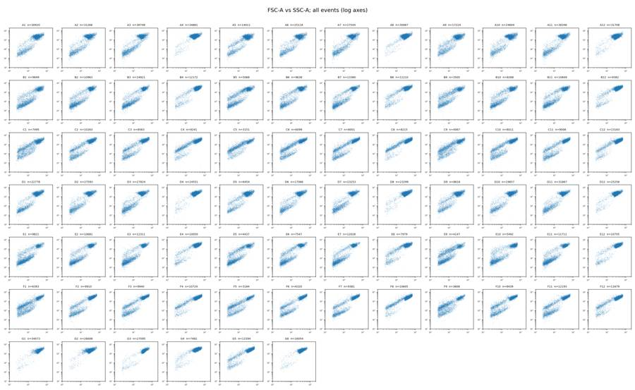
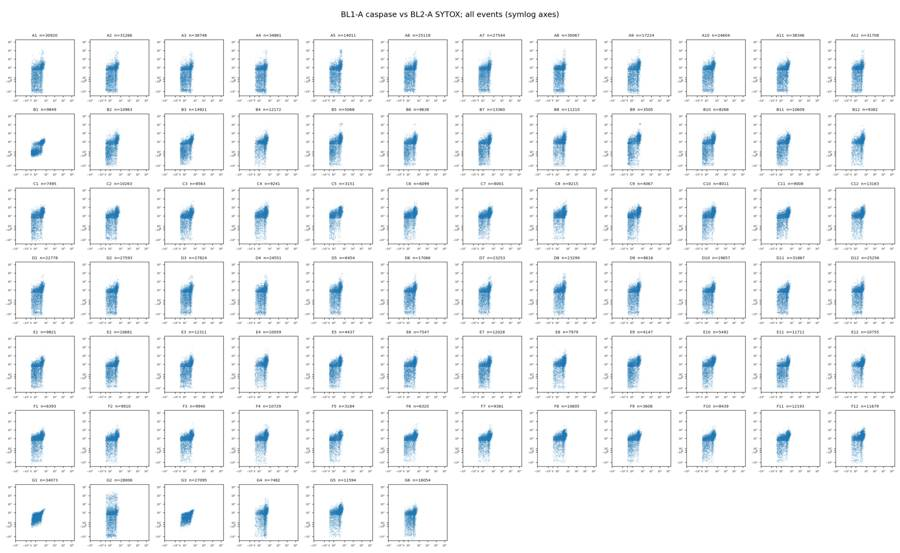
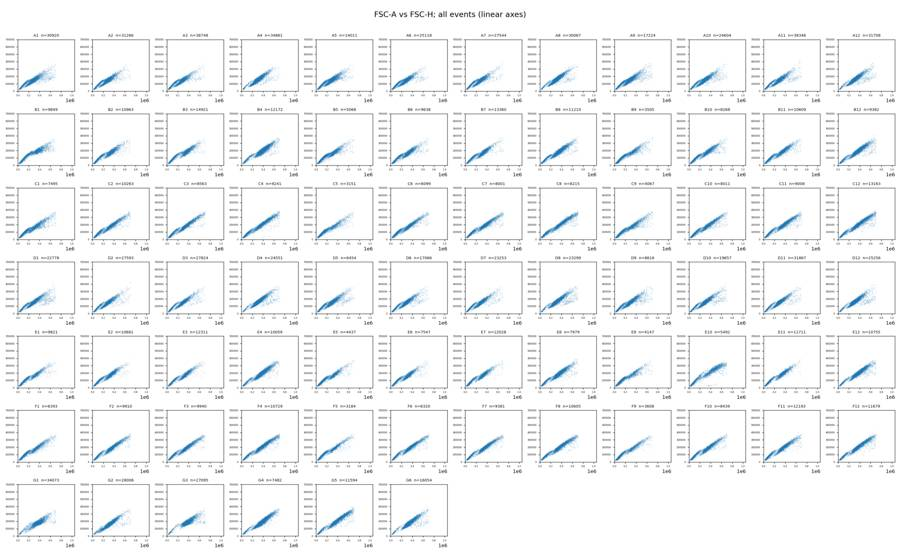
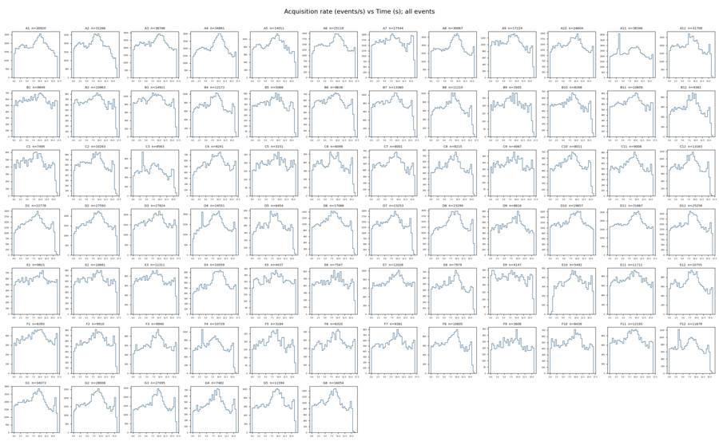
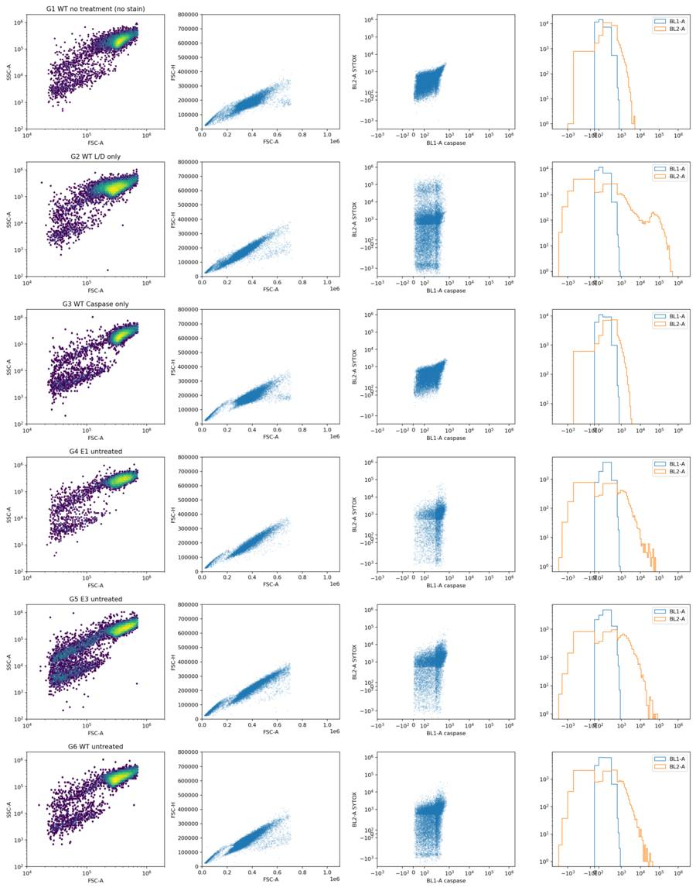
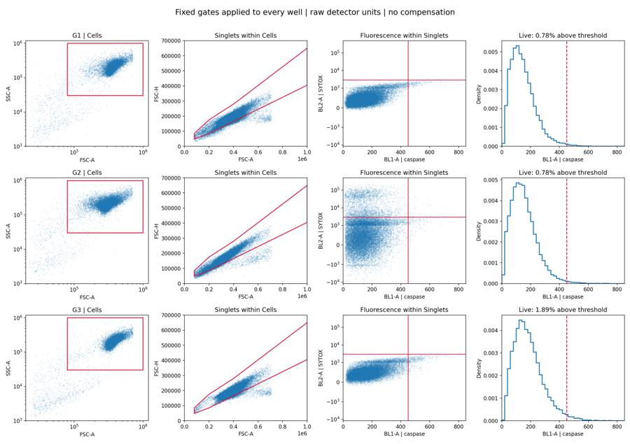
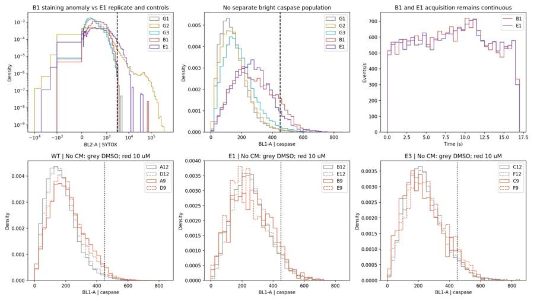
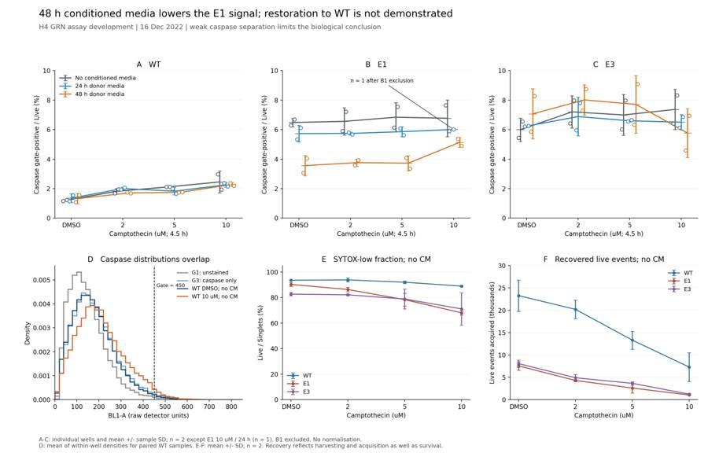

B1_flowkit · GPT-6 Astra · attempt QAkRdyP
Batch fk1 · job fk1_B_base_conditioned_media_flowkit_gpt-6-astra · trial B_base_conditioned_media_flowkit__QAkRdyP. Long tool outputs are cut at 6,000 characters.
Score
0.46
0.46
Minutes
10.2
10.2
Agent cost
$3.56
$3.56
Steps
21
21
Screenshots / images
8
8
1
task prompt (instruction.md)
<environment_context> <cwd>/task</cwd> <shell>bash</shell> <current_date>2026-11-10</current_date> <timezone>Etc/UTC</timezone> <filesystem><workspace_roots><root>/task</root></workspace_roots><permission_profile type="disabled"><file_system type="unrestricted" /></permission_profile></filesystem> </environment_context>
2
user message
# Conditioned-media caspase plate (16-Dec-2022): analyse, conclude, decide
You are the analyst for this experiment: analyse the plate, answer the plan's question, and recommend the next step.
## Inputs (read-only)
| path | content |
|---|---|
| `/task/inputs/plan.md` | Notebook plan for this run: purpose, rationale, reagents, protocol, plate maps, cytometer settings |
| `/task/inputs/plate_layout.csv` | One row per FCS file: `file, well, sample, cell_line, camptothecin, conditioned_media` (plate-map wording) |
| `/task/inputs/raw/` | 78 FCS 3.1 files (Thermo Attune NxT, acquired 16-Dec-2022), wells A1–F12 and G1–G6 |
## Environment
- **Network.** None.
## Channels
Channel names are the labels stored inside the FCS files ($PnS). They may be out of date. Use the plan's reagent list and cytometer settings to decide what each detector measured.
| detector | Name in the FCS file (`$PnS`) |
|---|---|
| FSC-A / FSC-H / FSC-W | FSC-A / FSC-H / FSC-W |
| SSC-A / SSC-H / SSC-W | SSC-A / SSC-H / SSC-W |
| BL1-A / BL1-H / BL1-W | AAV-GFP-GFP-A / AAV-GFP-GFP-H / AAV-GFP-GFP-W |
| BL2-A / BL2-H / BL2-W | AAdvanced livedead-A / AAdvanced livedead-H / AAdvanced livedead-W |
| Time | Time |
## Deliverables (all in `/task/outputs/`)
### 1. `gates.xml`
- Your gating strategy as GatingML 2.0, written with `flowkit.export_gatingml` (see *Software*). It must load with `flowkit.parse_gating_xml("/task/outputs/gates.xml")`.
- Every population in `counts.csv` except `all_events` must be a gate in this file with exactly the same name.
- These gates must be the ones that produced `counts.csv`.
### 2. `counts.csv`
Columns, in order: `file, well, population, role, parent, count, pct_of_parent`.
**Rows**
- One row per FCS file × population, covering all 78 files.
- Every file has the same population set.
**Columns**
- `file`: exact FCS file name. `well`: as in `plate_layout.csv`.
- `population`: your gate names (no commas). Each file also has one row with `population` = `all_events`, `role` = `other`, `parent` = `none`, `count` = total events and `pct_of_parent` empty.
- `role` ∈ {`cells`, `singlets`, `live`, `marker_positive`, `other`}.
- Each of `cells`, `singlets`, `live` and `marker_positive` is used by exactly one population, the same population in every file.
- `other` may be used by any number of populations.
- `parent`: the parent population's name (another population of the same file, or `all_events`). Use `none` only for `all_events`.
- `count`: integer number of events in the population.
- `pct_of_parent`: 100 × count / parent count.
### 3. `flags.csv`
Columns, in order: `file, well, issue_type, evidence, decision`. Exactly one row per FCS file (78 rows).
- Flag any well whose data should not be used, with evidence.
- `issue_type` ∈ {`none`, `clog`, `ran_dry`, `too_few_events`, `saturation`, `bad_control`, `mislabel`, `other`}. If a well has several issues, give the main one here and describe the rest in `evidence`.
- `evidence`: required unless `issue_type` = `none`. It must cite at least one number taken from the data.
- `decision` ∈ {`keep`, `keep_with_note`, `exclude`}.
- Wells marked `exclude` must appear in `answer.json` → `excluded_wells` and must not be used in `condition_summary.csv`.
### 4. `condition_summary.csv`
Columns, in order: `condition, wells, n_wells_used, mean, sd, metric_definition, normalisation_applied`. One row per condition you define.
- `condition`: your name for the condition. Names must be unique and contain no commas.
- `wells`: the plate wells used, separated by `;` (e.g. `X1;X2`).
- `n_wells_used`: integer, equal to the number of wells listed.
- `mean`, `sd`: computed across the listed wells, in the units of your metric. Leave `sd` empty when `n_wells_used` = 1.
- `metric_definition`: which population counts form the numerator and the denominator, or another exact definition.
- `normalisation_applied`: `none`, or the exact formula used.
### 5. `figure.png`
The main result chart.
### 6. `report.md`
These headings, in this order: `## Question`, `## Methods`, `## Results`, `## Conclusion`, `## Caveats`, `## Recommendation`.
### 7. `answer.json`
```
{"question": str,
"comparisons": [{"comparison": str, "a": <condition>, "b": <condition>,
"direction": "increase"|"decrease"|"no_clear_change",
"magnitude": str, "confidence": "high"|"medium"|"low"}],
"overall_answer": "yes: ..." | "partial: ..." | "no: ...",
"assay_verdict": "fit_for_purpose"|"needs_optimisation"|"not_fit_for_purpose",
"next_action": <ACTION>,
"next_change": {"what": str, "from": str, "to": str, "why": str},
"excluded_wells": [well IDs],
"caveats": [str]}
```
- `comparisons`: at least one comparison.
- `a` and `b` must be `condition` values from `condition_summary.csv`.
- `direction` describes `a` relative to `b` (`increase` = a higher than b).
- `magnitude` states the size of the difference, with a number.
- `overall_answer` must start with `yes:`, `partial:` or `no:`.
- `next_action` ∈ {`proceed_as_planned`, `repeat_unchanged`, `repeat_with_change`, `optimise_reagent_or_setting`, `change_treatment_or_timing`, `switch_assay`, `stop`}.
- `next_change`: the change you recommend, as an object: `what` (the step, reagent or condition to change), `from` (its value as run), `to` (the value you recommend) and `why`. Use empty strings if you recommend no change.
- `excluded_wells`: well IDs (e.g. `G1`) that have `decision` = `exclude` in `flags.csv`. Use `[]` if there are none.
## Constraints
- Time budget: 5 hours.
- Do not modify anything in `/task/inputs/`.
## Software (FlowKit version of this task)
- **Python 3 with FlowKit 1.2.3** (plus flowio, numpy, pandas, scipy, matplotlib, openpyxl) is installed. There is no graphical analysis program.
- **Load** each file with `flowkit.Sample(path)`. Build **one** `flowkit.GatingStrategy` for all wells, with `flowkit.Dimension` and `flowkit.gates.RectangleGate`, `PolygonGate` or `EllipsoidGate` (no quadrant or Boolean gates).
- **Gate names** must be valid XML IDs: letters, digits and underscores, starting with a letter (no spaces or `+`).
- **One gate per reported population**, named exactly as the population and nested under its parent population (the first population's gate sits at the root). A population's events are its own gate within its parent.
- **Compensation.** Your choice. Every gate dimension must state its `compensation_ref` (`"uncompensated"`, `"FCS"` for the file's own spillover matrix, or the id of a matrix you add to the strategy).
- **Channels.** FlowKit gate dimensions use the detector ID (`$PnN`, e.g. `BL1-A`), not the text label.
- **Transforms.** You may draw gates on transformed axes (for example `flowkit.transforms.LogicleTransform`, added with `add_transform` and referenced by `transformation_ref`).
- **Save** the strategy with `flowkit.export_gatingml(strategy, open("/task/outputs/gates.xml", "wb"))` and check that it reloads with `flowkit.parse_gating_xml`.
- **Counts.** `counts.csv` must be the counts these saved gates give on each file (`strategy.gate_sample(sample)`), with no per-well changes.
- **Looking at data.** Save plots as PNG files and open the image files to view them.
---
## How you work
You work in a **terminal** (bash, working directory `/task`).
- **Inputs** are in `/task/inputs/` (read-only). **Write every deliverable to `/task/outputs/`.** Only that folder is collected for grading.
- **Limits.** There is no limit on the number of actions; the only limit is the time budget above. Save `gates.xml` and your output files early and often.
3
agent
I’ll read the plan, inspect the controls and acquisition quality, then apply one gating strategy across the plate. I’ll save the gates, counts, result chart, and a recommendation in `/task/outputs/`.
tool call · exec
text(await tools.exec_command({cmd:"pwd && rg --files -g 'AGENTS.md' -g 'plan.md' -g 'plate_layout.csv' -g '*.py' -g 'SKILL.md' /task /installed-agent/codex-home/skills 2>/dev/null","max_output_tokens":6000}));
text(ALL_TOOLS.filter(x=>/terminal|python|file|directory/.test(x.name+" "+x.description)).map(x=>({name:x.name,description:x.description.slice(0,100)})).slice(0,60));
tool output
Script completed
Wall time 0.1 seconds
Output:
{"chunk_id":"6beb12","wall_time_seconds":0.00000289,"exit_code":0,"original_token_count":15,"output":"/task\n/task/inputs/plate_layout.csv\n/task/inputs/plan.md\n"}
[{"name":"apply_patch","description":"The `apply_patch` tool can be used to edit files. This is a FREEFORM tool, so do not wrap the patch "},{"name":"exec_command","description":"Runs a command in a PTY, returning output or a session ID for ongoing interaction.\n\nexec tool declar"},{"name":"list_mcp_resource_templates","description":"Lists resource templates provided by MCP servers. Parameterized resource templates allow servers to "},{"name":"list_mcp_resources","description":"Lists resources provided by MCP servers. Resources allow servers to share data that provides context"},{"name":"view_image","description":"View a local image file from the filesystem when visual inspection is needed. Use this for images al"}]tool call · exec
const r=await Promise.allSettled([
tools.exec_command({cmd:"cat /task/inputs/plan.md","max_output_tokens":16000}),
tools.exec_command({cmd:"cat /task/inputs/plate_layout.csv","max_output_tokens":12000}),
tools.exec_command({cmd:"ls -la /task && python - <<'PY'\nimport flowkit as fk, inspect, os\nprint('FlowKit', fk.__version__)\nprint('Files',len(os.listdir('/task/inputs/raw')))\nprint('Sample', inspect.signature(fk.Sample))\nprint('Dimension',inspect.signature(fk.Dimension))\nprint('Rectangle',inspect.signature(fk.gates.RectangleGate))\nprint('Polygon',inspect.signature(fk.gates.PolygonGate))\nprint('Ellipsoid',inspect.signature(fk.gates.EllipsoidGate))\nprint('gate_sample',inspect.signature(fk.GatingStrategy.gate_sample))\nPY","max_output_tokens":6000})
]); r.forEach(text);
tool output
Script completed
Wall time 1.9 seconds
Output:
{"status":"fulfilled","value":{"chunk_id":"e4e412","wall_time_seconds":0.00000305,"exit_code":0,"original_token_count":1149,"output":"# Plan: Caspase activity assay development with progranulin conditioned media (H4 cells)\n\nSource: lab notebook entry (target PGRN; assay development; cell-based; flow; cell type H4). This plan covers the plate acquired on 16-Dec-2022. People's names, and all text written after acquisition, have been removed.\n\n## Purpose\nTo determine if progranulin conditioned media can restore wild-type levels of caspase activity in H4 GRN KO cells.\n\n## Rationale\nPrevious literature evidence suggests that applying exogenous progranulin to cells can restore molecular phenotypes in progranulin deficient lines. Our previous experiment with caspase activity on H4 GRN WT and KO cells showed that GRN KO lines had increased caspase activity. This difference was enhanced after campothesin challenge in both GRN WT and KO cells. In this experiment, we will determine if applying conditioned media from WT cell lines onto KO lines can reduce caspase activity closer to WT levels.\n\n## Materials\n- H4 WT cells\n- H4 PGRN KO E1\n- H4 PGRN KO E3\n- H4 media (DMEM + 10% FBS)\n- CellEvent Caspase-3/7 Green Flow Cytometry Assay Kit\n- SYTOX AAdvanced Dead Cell Stain\n- Camptothecin\n\n## Protocol\n\n### 2022-12-12: conditioned-media donor plate\n- Passage WT H4 cells into 96 well plate (10K/well). This plate is the one the media is collected from.\n\nDonor plate map, as written (12 columns per line):\n\n```\nWT WT WT WT WT WT WT WT WT WT WT WT\nWT WT WT WT WT WT WT WT WT WT WT WT\nWT WT WT WT WT WT WT WT WT WT WT WT\n24hr\nWT WT WT WT WT WT WT WT WT WT WT WT\nWT WT WT WT WT WT WT WT WT WT WT WT\nWT WT WT WT WT WT WT WT WT WT WT WT\n48hr\n```\n\nRed = 24 hr media collection; Purple = 48hr media collection. Cell colours of this map were not preserved in the export.\n\n### 2022-12-13\n2. Collect media from 24hr wells\n3. Spin down at 2000xg for 10min @4C and collect into fresh plate\n\n### 2022-12-14\n4. Collect media from 48hr wells\n5. Spin down at 2000xg for 10min. Collect into fresh plate\n- Passage all H4 lines into 96 well plate for assay (10K/well) according to the assay plate map below.\n\n### Assay plate map\nThe map is as written. Row letters A–H and column numbers 1–12 have been added for orientation.\n\n| | 1 | 2 | 3 | 4 | 5 | 6 | 7 | 8 | 9 | 10 | 11 | 12 |\n|---|---|---|---|---|---|---|---|---|---|---|---|---|\n| A | WT 10uM | WT 5uM | WT 2uM | WT DMSO | WT 10uM | WT 5uM | WT 2uM | WT DMSO | WT 10uM | WT 5uM | WT 2uM | WT DMSO |\n| B | E1 10uM | E1 5uM | E1 2uM | E1 DMSO | E1 10uM | E1 5uM | E1 2uM | E1 DMSO | E1 10uM | E1 5uM | E1 2uM | E1 DMSO |\n| C | E3 10uM | E3 5uM | E3 2uM | E3 DMSO | E3 10uM | E3 5uM | E3 2uM | E3 DMSO | E3 10uM | E3 5uM | E3 2uM | E3 DMSO |\n| D | WT 10uM | WT 5uM | WT 2uM | WT DMSO | WT 10uM | WT 5uM | WT 2uM | WT DMSO | WT 10uM | WT 5uM | WT 2uM | WT DMSO |\n| E | E1 10uM | E1 5uM | E1 2uM | E1 DMSO | E1 10uM | E1 5uM | E1 2uM | E1 DMSO | E1 10uM | E1 5uM | E1 2uM | E1 DMSO |\n| F | E3 10uM | E3 5uM | E3 2uM | E3 DMSO | E3 10uM | E3 5uM | E3 2uM | E3 DMSO | E3 10uM | E3 5uM | E3 2uM | E3 DMSO |\n| G | WT no treatment (no stain) | WT L/D only | WT Caspase only | E1 untreated | E3 untreated | WT untreated | | | | | | |\n| H | 24hr conditioned media | | | | 48hr conditoned media | | | | No condtioned media | | | |\n\nCell colours in the notebook:\n- Rows A–F, columns 1–4: blue (#94B5DD).\n- Rows A–F, columns 5–8: green (#D5F0AD).\n- Rows A–F, columns 9–12: uncoloured.\n- Row G: uncoloured.\n- Row H: \"24hr conditioned media\" is blue; \"48hr conditoned media\" is green; \"No condtioned media\" is uncoloured.\n\n### 2022-12-15\n6. Rinse wells with DMEM and then add conditioned media\n\n### 2022-12-16\n7. Add camptothecin to wells at indicated dose. Incubate for 4.5hr\n8. Run flow\n\n### Staining and acquisition (assay protocol as written in this entry)\n- Aspirate media and wash with PBS\n- Add 150uL trypsin incubate for 5min\n- Add 75uL FBS and collect into 96w round bottom plate\n- spin down 200xg for 5min\n- Add 200uL of Cell Event Caspase 3/7 Detection reagent (1:1000) in flow staining buffer. Incubate for 30min at 37C\n- Prepare SYTOX AAdvanced Dead Cell Stain at 100uM concentration by adding 1000uL DMSO to stain. Mix well\n- During the final 5 minutes of 30min Caspase incubation add 2uL of the 100uM Dead Cell stain (final concentration of 1uM)\n- Analyze the samples without fixing.\n\nFlow cytometer settings: FSC-20; SSC-290; BL1 (caspase)-225, BL2 (AAddvanced Dead Cell Stain)-350\n\n## Acquisition\n- Instrument: Thermo Attune NxT.\n- Date: 16-Dec-2022.\n- Files: 78 FCS files, one per well (A1–F12 and G1–G6).\n"}}
{"status":"fulfilled","value":{"chunk_id":"97b897","wall_time_seconds":0.00000282,"exit_code":0,"original_token_count":1673,"output":"file,well,sample,cell_line,camptothecin,conditioned_media\nCaspase-assay-2-mlk(1)_caspase_Group_A1.fcs,A1,WT 10uM,WT,10uM,24hr conditioned media\nCaspase-assay-2-mlk(1)_caspase_Group_A2.fcs,A2,WT 5uM,WT,5uM,24hr conditioned media\nCaspase-assay-2-mlk(1)_caspase_Group_A3.fcs,A3,WT 2uM,WT,2uM,24hr conditioned media\nCaspase-assay-2-mlk(1)_caspase_Group_A4.fcs,A4,WT DMSO,WT,DMSO,24hr conditioned media\nCaspase-assay-2-mlk(1)_caspase_Group_A5.fcs,A5,WT 10uM,WT,10uM,48hr conditioned media\nCaspase-assay-2-mlk(1)_caspase_Group_A6.fcs,A6,WT 5uM,WT,5uM,48hr conditioned media\nCaspase-assay-2-mlk(1)_caspase_Group_A7.fcs,A7,WT 2uM,WT,2uM,48hr conditioned media\nCaspase-assay-2-mlk(1)_caspase_Group_A8.fcs,A8,WT DMSO,WT,DMSO,48hr conditioned media\nCaspase-assay-2-mlk(1)_caspase_Group_A9.fcs,A9,WT 10uM,WT,10uM,No conditioned media\nCaspase-assay-2-mlk(1)_caspase_Group_A10.fcs,A10,WT 5uM,WT,5uM,No conditioned media\nCaspase-assay-2-mlk(1)_caspase_Group_A11.fcs,A11,WT 2uM,WT,2uM,No conditioned media\nCasp
… [6,786 more characters not shown]tool call · exec
text(await tools.exec_command({cmd:"python - <<'PY'\nimport flowkit as fk, pandas as pd, inspect\nlayout=pd.read_csv('/task/inputs/plate_layout.csv')\ns=fk.Sample('/task/inputs/raw/'+layout.iloc[0]['file'])\nprint(s)\nprint(s.channels.to_string())\nprint(s.metadata)\nprint('Raw events example',s.get_events(source='raw')[:4])\nprint(inspect.signature(fk.GatingStrategy.add_gate))\nprint(inspect.signature(fk.GatingStrategy.add_transform))\nprint(inspect.signature(fk.GatingStrategy.add_comp_matrix))\nprint(inspect.signature(fk.Matrix))\nprint(inspect.signature(fk.transforms.LogicleTransform))\nprint(inspect.getsource(fk.GatingStrategy.gate_sample)[-4500:])\nPY","max_output_tokens":12000}));
tool output
Script completed
Wall time 1.0 seconds
Output:
{"chunk_id":"a39383","wall_time_seconds":0.814996719,"exit_code":0,"original_token_count":2532,"output":"Sample(v3.1, A1.fcs, 13 channels, 30920 events)\n channel_number pnn pns png pne pnr\n0 1 Time Time 1.0 (0.0, 0.0) 67108864.0\n1 2 FSC-A FSC-A 1.0 (0.0, 0.0) 1048576.0\n2 3 SSC-A SSC-A 1.0 (0.0, 0.0) 1048576.0\n3 4 BL1-A AAV-GFP-GFP-A 1.0 (0.0, 0.0) 1048576.0\n4 5 BL2-A AAdvanced livedead-A 1.0 (0.0, 0.0) 1048576.0\n5 6 FSC-H FSC-H 1.0 (0.0, 0.0) 1048576.0\n6 7 SSC-H SSC-H 1.0 (0.0, 0.0) 1048576.0\n7 8 BL1-H AAV-GFP-GFP-H 1.0 (0.0, 0.0) 1048576.0\n8 9 BL2-H AAdvanced livedead-H 1.0 (0.0, 0.0) 1048576.0\n9 10 FSC-W FSC-W 1.0 (0.0, 0.0) 1024.0\n10 11 SSC-W SSC-W 1.0 (0.0, 0.0) 1024.0\n11 12 BL1-W AAV-GFP-GFP-W 1.0 (0.0, 0.0) 1024.0\n12 13 BL2-W AAdvanced livedead-W 1.0 (0.0, 0.0) 1024.0\n{'par': '13', 'tot': '30920', 'mode': 'L', 'datatype': 'F', 'byteord': '1,2,3,4', 'p1f': 'NA', 'p1l': 'NA', 'p1s': 'Time', 'p1v': 'NA', 'p1n': 'Time', 'p1b': '32', 'p1r': '67108864', 'p1e': '0,0', 'p2f': 'NA', 'p2l': '488', 'p2s': 'FSC-A', 'p2v': '20', 'p2n': 'FSC-A', 'p2b': '32', 'p2r': '1048576', 'p2e': '0,0', 'p3f': 'NA', 'p3l': '488', 'p3s': 'SSC-A', 'p3v': '290', 'p3n': 'SSC-A', 'p3b': '32', 'p3r': '1048576', 'p3e': '0,0', 'p4f': 'NA', 'p4l': '488', 'p4s': 'AAV-GFP-GFP-A', 'p4v': '225', 'p4n': 'BL1-A', 'p4b': '32', 'p4r': '1048576', 'p4e': '0,0', 'p5f': 'NA', 'p5l': '488', 'p5s': 'AAdvanced livedead-A', 'p5v': '350', 'p5n': 'BL2-A', 'p5b': '32', 'p5r': '1048576', 'p5e': '0,0', 'p6f': 'NA', 'p6l': '488', 'p6s': 'FSC-H', 'p6v': '20', 'p6n': 'FSC-H', 'p6b': '32', 'p6r': '1048576', 'p6e': '0,0', 'p7f': 'NA', 'p7l': '488', 'p7s': 'SSC-H', 'p7v': '290', 'p7n': 'SSC-H', 'p7b': '32', 'p7r': '1048576', 'p7e': '0,0', 'p8f': 'NA', 'p8l': '488', 'p8s': 'AAV-GFP-GFP-H', 'p8v': '225', 'p8n': 'BL1-H', 'p8b': '32', 'p8r': '1048576', 'p8e': '0,0', 'p9f': 'NA', 'p9l': '488', 'p9s': 'AAdvanced livedead-H', 'p9v': '350', 'p9n': 'BL2-H', 'p9b': '32', 'p9r': '1048576', 'p9e': '0,0', 'p10f': 'NA', 'p10l': '488', 'p10s': 'FSC-W', 'p10v': '20', 'p10n': 'FSC-W', 'p10b': '32', 'p10r': '1024', 'p10e': '0,0', 'p11f': 'NA', 'p11l': '488', 'p11s': 'SSC-W', 'p11v': '290', 'p11n': 'SSC-W', 'p11b': '32', 'p11r': '1024', 'p11e': '0,0', 'p12f': 'NA', 'p12l': '488', 'p12s': 'AAV-GFP-GFP-W', 'p12v': '225', 'p12n': 'BL1-W', 'p12b': '32', 'p12r': '1024', 'p12e': '0,0', 'p13f': 'NA', 'p13l': '488', 'p13s': 'AAdvanced livedead-W', 'p13v': '350', 'p13n': 'BL2-W', 'p13b': '32', 'p13r': '1024', 'p13e': '0,0', 'cyt': '0A29009 Attune NxT Acoustic Focusing Cytometer (Lasers: BRV6Y)', 'sys': 'SEA11065ATTUNE Microsoft Windows 10 Enterprise LTSC', 'spillover': '6,BL1-A,BL2-A,BL1-H,BL2-H,BL1-W,BL2-W,1.000000,0.000000,0.000000,0.000000,0.000000,0.000000,0.000000,1.000000,0.000000,0.000000,0.000000,0.000000,0.000000,0.000000,1.000000,0.000000,0.000000,0.000000,0.000000,0.000000,0.000000,1.000000,0.000000,0.000000,0.000000,0.000000,0.000000,0.000000,1.000000,0.000000,0.000000,0.000000,0.000000,0.000000,0.000000,1.000000', 'btim': '14:27:29', 'cells': 'NA', 'com': 'NA', 'cytsn': '2AFC228071019', 'date': '16-Dec-2022', 'etim': '14:27:46', 'exp': 'NA', 'fil': 'A1.fcs', 'inst': 'NA', 'originality': 'Original', 'lost': '0', 'op': 'Jeff Huang', 'plateid': 'NA', 'platename': 'Caspase-assay-2-mlk(1)', 'proj': 'caspase', 'smno': 'Group', 'src': 'NA', 'timestep': '0.001', 'vol': '140000', 'wellid': 'A1', '#coincidentcount': '1385', '#flowrate': '500', '#laser1asf': '1.07', '#laser1color': 'Blue', '#laser1delay': '1100', '#laser2asf': '1.09', '#laser2color': 'Red', '#laser2delay': '1516', '#laser3asf': '1.04', '#laser3color': 'Violet', '#laser3delay': '702', '#laser4asf': '1.00', '#laser4color': 'Yellow', '#laser4delay': '273', '#laserconfig': 'BRV6Y', '#p12label': 'GFP', '#p12target': 'AAV-GFP', '#p13target': 'AAdvanced livedead', '#p1label': 'NA', '#p1target': 'NA', '#p4label': 'GFP', '#p4target': 'AAV-GFP', '#p5target': 'AAdvanced livedead', '#p8label': 'GFP', '#p8target': 'AAV-GFP', '#p9target': 'AAdvanced livedead', '#ptdate': '16-Dec-2022', '#ptresult': 'Pass', '#tr1': 'OR_FSC,25000', '#widththreshold': '1000', '#winext': '0', 'hostid': 'SEA11065ATTUNE', 'begindata': '000000008192', 'enddata': '000001616031', 'nextdata': '000000000000', 'beginstext': '000000000000', 'endstext': '000000000000', 'beginanalysis': '000000000000', 'endanalysis': '000000000000'}\nRaw events example [[ 1.40000e-02 4.35254e+05 3.50215e+05 1.73000e+02 4.92000e+02\n 2.16830e+05 1.74616e+05 1.30000e+02 8.23000e+02 1.66000e+02\n 1.66000e+02 0.00000e+00 0.00000e+00]\n [ 1.50000e-02 5.63920e+04 2.41100e+03 4.70000e+01 1.63000e+02\n 5.02220e+04 2.38000e+03 5.40000e+01 4.25000e+02 8.80000e+01\n 2.80000e+01 0.00000e+00 0.00000e+00]\n [ 1.50000e-02 5.67990e+04 4.38200e+03 6.50000e+01 -1.88000e+02\n 5.09150e+04 3.97000e+03 9.00000e+01 3.19000e+02 8.70000e+01\n 3.70000e+01 0.00000e+00 0.00000e+00]\n [ 1.50000e-02 3.97916e+05 2.80316e+05 1.68000e+02 1.28400e+03\n 2.08753e+05 1.63419e+05 1.28000e+02 6.38000e+02 1.56000e+02\n 1.36000e+02 0.00000e+00 0.00000e+00]]\n(self, gate, gate_path, sample_id=None)\n(self, transform_id, transform)\n(self, matrix_id, matrix)\n(spill_data_or_file, detectors, fluorochromes=None, null_channels=None)\n(param_t, param_w, param_m, param_a)\n. This should avoid having any gate\n # processed more than once.\n process_order = list(nx.algorithms.topological_sort(self._dag))\n\n process_order.remove(('root',))\
… [4,427 more characters not shown]tool call · exec
text(await tools.apply_patch("*** Begin Patch\n*** Add File: /task/outputs/explore.py\n+from pathlib import Path\n+import json\n+import numpy as np\n+import pandas as pd\n+import matplotlib\n+matplotlib.use('Agg')\n+import matplotlib.pyplot as plt\n+import flowkit as fk\n+\n+BASE=Path('/task')\n+OUT=BASE/'outputs'\n+LAYOUT=pd.read_csv(BASE/'inputs/plate_layout.csv')\n+CHANNELS=['Time','FSC-A','SSC-A','BL1-A','BL2-A','FSC-H','SSC-H','BL1-H','BL2-H','FSC-W','SSC-W','BL1-W','BL2-W']\n+\n+def load_samples():\n+ return {r.well:fk.Sample(str(BASE/'inputs/raw'/r.file), sample_id=r.well) for r in LAYOUT.itertuples()}\n+\n+def main():\n+ samples=load_samples()\n+ rows=[]\n+ meta={}\n+ for well,s in samples.items():\n+ a=s.get_events(source='raw')\n+ assert s.channels.pnn.tolist()==CHANNELS\n+ t=a[:,0]\n+ bins=np.linspace(t.min(),t.max(),21)\n+ rate=np.histogram(t,bins)[0]/np.diff(bins)\n+ row={'well':well,'n_events':len(a),'time_min':t.min(),'time_max':t.max(),\n+ 'rate_mean':len(a)/(t.max()-t.min()),'rate_bin_min':rate.min(),'rate_bin_max':rate.max(),\n+ 'rate_first_last_ratio':rate[:4].mean()/max(1,rate[-4:].mean()),\n+ 'max_time_gap':np.diff(t).max(),'negative_time_steps':int((np.diff(t)<0).sum())}\n+ for j,c in enumerate(CHANNELS[1:],1):\n+ for q in [0,.01,.05,.25,.5,.75,.95,.99,1]:\n+ row[c+'_q'+str(int(q*100))]=np.quantile(a[:,j],q)\n+ row[c+'_near_range_pct']=100*np.mean(a[:,j]>=float(s.channels.iloc[j].pnr)*.99)\n+ row[c+'_negative_pct']=100*np.mean(a[:,j]<0)\n+ rows.append(row)\n+ meta[well]={k:s.metadata[k] for k in ['wellid','fil','date','btim','etim','timestep','vol','#flowrate','spillover','#tr1','lost','#coincidentcount']}\n+ pd.DataFrame(rows).to_csv(OUT/'raw_qc.csv',index=False)\n+ (OUT/'acquisition_metadata.json').write_text(json.dumps(meta,indent=2))\n+ rng=np.random.default_rng(42)\n+ for kind in ['scatter','fluorescence','singlets','time']:\n+ fig,axes=plt.subplots(7,12,figsize=(26,16),squeeze=False)\n+ for ax in axes.flat: ax.set_visible(False)\n+ for r in LAYOUT.itertuples():\n+ ax=axes[ord(r.well[0])-65,int(r.well[1:])-1]\n+ ax.set_visible(True)\n+ a=samples[r.well].get_events(source='raw')\n+ z=a[rng.choice(len(a),min(4000,len(a)),replace=False)]\n+ if kind=='scatter':\n+ ax.scatter(z[:,1],z[:,2],s=.4,alpha=.2,rasterized=True)\n+ ax.set(xscale='log',yscale='log',xlim=(1e4,2e6),ylim=(1e2,2e6))\n+ elif kind=='fluorescence':\n+ ax.scatter(z[:,3],z[:,4],s=.4,alpha=.2,rasterized=True)\n+ ax.set_xscale('symlog',linthresh=200)\n+ ax.set_yscale('symlog',linthresh=500)\n+ ax.set(xlim=(-1000,2e6),ylim=(-3000,2e6))\n+ elif kind=='singlets':\n+ ax.scatter(z[:,1],z[:,5],s=.4,alpha=.2,rasterized=True)\n+ ax.set(xlim=(0,1.05e6),ylim=(0,7e5))\n+ else:\n+ t=a[:,0]\n+ edges=np.linspace(0,max(t.max(),1),35)\n+ ax.stairs(np.histogram(t,edges)[0]/np.diff(edges),edges,color='#30628b')\n+ ax.set(ylim=(0,None))\n+ ax.set_title(r.well+' n='+str(len(a)),fontsize=8)\n+ ax.tick_params(labelsize=5)\n+ labels={'scatter':'FSC-A vs SSC-A; all events (log axes)',\n+ 'fluorescence':'BL1-A caspase vs BL2-A SYTOX; all events (symlog axes)',\n+ 'singlets':'FSC-A vs FSC-H; all events (linear axes)',\n+ 'time':'Acquisition rate (events/s) vs Time (s); all events'}\n+ fig.suptitle(labels[kind],fontsize=16)\n+ fig.tight_layout(rect=(0,0,1,.97))\n+ fig.savefig(OUT/('explore_'+kind+'.png'),dpi=130)\n+ plt.close(fig)\n+ fig,axes=plt.subplots(6,4,figsize=(18,23))\n+ for i,well in enumerate(['G1','G2','G3','G4','G5','G6']):\n+ a=samples[well].get_events(source='raw')\n+ z=a[rng.choice(len(a),min(15000,len(a)),replace=False)]\n+ axes[i,0].hexbin(z[:,1],z[:,2],xscale='log',yscale='log',gridsize=80,mincnt=1,bins='log')\n+ axes[i,0].set(xlim=(1e4,2e6),ylim=(100,2e6),xlabel='FSC-A',ylabel='SSC-A',title=well+' '+LAYOUT.set_index('well').loc[well,'sample'])\n+ axes[i,1].scatter(z[:,1],z[:,5],s=1,alpha=.15)\n+ axes[i,1].set(xlim=(0,1.1e6),ylim=(0,8e5),xlabel='FSC-A',ylabel='FSC-H')\n+ axes[i,2].scatter(z[:,3],z[:,4],s=1,alpha=.15)\n+ axes[i,2].set_xscale('symlog',linthresh=200)\n+ axes[i,2].set_yscale('symlog',linthresh=500)\n+ axes[i,2].set(xlim=(-1000,2e6),ylim=(-3000,2e6),xlabel='BL1-A caspase',ylabel='BL2-A SYTOX')\n+ for j,c in [(3,'BL1-A'),(4,'BL2-A')]:\n+ edges=np.r_[-3000,-2000,-1000,-500,0,100,200,400,np.geomspace(600,2e6,65)]\n+ axes[i,3].hist(a[:,j],bins=edges,histtype='step',density=False,label=c)\n+ axes[i,3].set_xscale('symlog',linthresh=500)\n+ axes[i,3].set_yscale('log')\n+ axes[i,3].legend()\n+ fig.tight_layout()\n+ fig.savefig(OUT/'explore_controls.png',dpi=160)\n+ plt.close(fig)\n+\n+if __name__=='__main__': main()\n*** End Patch"));
text(await tools.exec_command({cmd:"python /task/outputs/explore.py","yield_time_ms":1000,"max_output_tokens":2000}));
tool output
Script completed
Wall time 1.2 seconds
Output:
{}
{"chunk_id":"244df1","wall_time_seconds":1.001239657,"session_id":11584,"original_token_count":0,"output":""}tool call · exec
text(await tools.exec_command({cmd:"python - <<'PY'\nimport pandas as pd\nq=pd.read_csv('/task/outputs/raw_qc.csv')\ncs=['well','n_events','time_max','rate_mean','rate_first_last_ratio','FSC-A_q50','SSC-A_q50','BL1-A_q50','BL1-A_q95','BL1-A_q100','BL1-A_near_range_pct','BL2-A_q50','BL2-A_q95','BL2-A_q100','BL2-A_near_range_pct']\nprint(q[cs].to_string(index=False))\nPY","max_output_tokens":13000}));
text(await tools.write_stdin({session_id:11584,chars:"","yield_time_ms":1000,"max_output_tokens":2000}));
tool output
Script completed
Wall time 5.3 seconds
Output:
{"chunk_id":"457a0f","wall_time_seconds":0.122262881,"exit_code":0,"original_token_count":3832,"output":"well n_events time_max rate_mean rate_first_last_ratio FSC-A_q50 SSC-A_q50 BL1-A_q50 BL1-A_q95 BL1-A_q100 BL1-A_near_range_pct BL2-A_q50 BL2-A_q95 BL2-A_q100 BL2-A_near_range_pct\n A1 30920 16.721 1850.721255 1.170835 244758.5 177361.0 152.0 406.00 805.0 0.0 418.0 3912.10 185690.0 0.0\n A2 31266 16.571 1888.385577 1.511628 233649.5 180769.0 147.0 390.00 795.0 0.0 365.0 3332.75 139493.0 0.0\n A3 38748 16.778 2311.381532 1.113584 211445.0 152262.5 142.0 384.00 804.0 0.0 327.0 2921.00 134907.0 0.0\n A4 34861 16.734 2085.112746 1.114516 283227.0 236689.0 159.0 364.00 797.0 0.0 403.0 2907.00 164281.0 0.0\n A5 14011 16.581 845.819499 1.280710 243639.0 164373.0 160.0 416.00 750.0 0.0 522.0 5403.00 166916.0 0.0\n A6 25118 16.726 1502.991862 1.094407 240093.0 178379.5 151.0 390.00 794.0 0.0 439.0 3990.00 130930.0 0.0\n A7 27544 16.495 1671.359223 1.054241 228768.0 173797.0 149.0 390.00 803.0 0.0 409.0 3422.70 160488.0 0.0\n A8 30067 15.853 1898.528762 1.152637 285647.0 233735.0 159.0 368.70 810.0 0.0 468.0 3057.10 154894.0 0.0\n A9 17224 16.515 1043.942057 1.348297 238900.0 155498.5 169.0 426.00 769.0 0.0 524.0 4463.85 166596.0 0.0\n A10 24604 16.639 1479.939850 1.115300 248477.5 184166.0 164.0 408.00 785.0 0.0 518.0 4179.85 122435.0 0.0\n A11 38346 16.331 2349.920333 1.128841 241298.0 179418.0 156.0 394.00 810.0 0.0 439.0 3559.00 126939.0 0.0\n A12 31708 16.608 1910.811137 1.405494 289891.0 229642.5 161.0 374.00 787.0 0.0 565.0 3971.00 147803.0 0.0\n B1 9849 16.792 587.018715 1.031755 135209.0 28498.0 142.0 472.60 803.0 0.0 242.0 1297.60 73746.0 0.0\n B2 10963 16.731 655.838717 1.187706 122741.0 32873.0 151.0 435.00 804.0 0.0 502.0 4105.50 72999.0 0.0\n B3 14921 16.753 891.391361 1.221532 123483.0 22581.0 153.0 433.00 802.0 0.0 477.0 2981.00 53231.0 0.0\n B4 12172 16.570 735.246149 1.226588 379196.0 244805.5 222.0 460.00 801.0 0.0 893.0 3662.90 70747.0 0.0\n B5 5068 16.550 306.501361 1.214109 123780.5 59827.0 152.0 432.65 712.0 0.0 664.0 6036.25 179897.0 0.0\n B6 9638 16.830 573.144624 1.251497 212752.5 150582.5 173.0 433.00 781.0 0.0 677.5 4647.75 199435.0 0.0\n B7 13360 16.719 799.760551 1.268012 141766.5 58265.5 161.0 411.00 795.0 0.0 572.0 4270.45 88163.0 0.0\n B8 11210 16.671 672.990334 1.335253 331801.0 237540.5 209.0 436.00 796.0 0.0 987.0 6101.20 148747.0 0.0\n B9 3505 16.823 208.668215 1.288641 106105.0 47996.0 150.0 458.00 770.0 0.0 837.0 6833.80 155034.0 0.0\n B10 8268 16.540 500.302554 1.289913 150166.0 83513.5 168.0 458.00 766.0 0.0 697.0 5178.35 67210.0 0.0\n B11 10609 16.705 635.650090 1.038298 148062.0 76580.0 168.0 445.60 788.0 0.0 640.0 4571.40 56406.0 0.0\n B12 9382 16.354 574.208948 1.404800 356780.0 246169.0 232.0 481.00 812.0 0.0 1024.0 5206.65 124462.0 0.0\n C1 7495 16.445 456.288810 1.317489 155787.0 86499.0 170.0 474.00 823.0 0.0 1034.0 6276.10 47628.0 0.0\n C2 10263 16.756 613.045816 1.436650 235039.0 153747.0 174.0 463.00 819.0 0.0 927.0 6009.80 81375.0 0.0\n C3 8563 16.210 528.710793 1.393220 274339.0 181162.0 180.0 463.00 805.0 0.0 1018.0 6053.60 74987.0 0.0\n C4 9241 16.738 552.559196 0.885902 310988.0 185147.0 189.0 475.00 813.0 0.0 1298.0 8022.00 118525.0 0.0\n C5 3151 15.847 199.014716 0.941681 109001.0 64009.0 147.0 447.00 818.0 0.0 1405.0 8830.50 97710.0 0.
… [9,670 more characters not shown]8
agent
The plan identifies BL1 as the caspase detector; its “GFP” label is stale. So far, BL1 signals are dim across the plate, including the camptothecin wells, with substantial overlap with unstained cells. I’m checking whether the controls support a reliable caspase readout before interpreting any apparent rescue.
tool call · exec
text(await tools.write_stdin({session_id:11584,chars:"","yield_time_ms":1000,"max_output_tokens":2000}));
const r=await tools.view_image({path:"/task/outputs/explore_scatter.png"});image(r.image_url);
const t=await tools.view_image({path:"/task/outputs/explore_fluorescence.png"});image(t.image_url);
tool output
Script completed Wall time 5.1 seconds Output:
{"chunk_id":"9591b5","wall_time_seconds":5.001410473,"session_id":11584,"original_token_count":0,"output":""}

tool call · exec
text(await tools.write_stdin({session_id:11584,chars:"","yield_time_ms":1000,"max_output_tokens":2000}));
for (const path of ["/task/outputs/explore_singlets.png","/task/outputs/explore_controls.png","/task/outputs/explore_time.png"]) {
const r=await tools.view_image({path});image(r.image_url);
}
tool output
Script failed Wall time 0.0 seconds Output:
{"chunk_id":"f12c4c","wall_time_seconds":0.00000287,"exit_code":1,"original_token_count":156,"output":"Traceback (most recent call last):\n File \"/task/outputs/explore.py\", line 98, in <module>\n if __name__=='__main__': main()\n ^^^^^^\n File \"/task/outputs/explore.py\", line 80, in main\n axes[i,0].hexbin(z[:,1],z[:,2],xscale='log',yscale='log',gridsize=80,mincnt=1,bins='log')\n File \"/usr/local/lib/python3.12/site-packages/matplotlib/__init__.py\", line 1476, in inner\n return func(\n ^^^^^\n File \"/usr/local/lib/python3.12/site-packages/matplotlib/axes/_axes.py\", line 5106, in hexbin\n raise ValueError(\nValueError: y contains non-positive values, so cannot be log-scaled\n"}
Script error: unable to locate image at `/task/outputs/explore_controls.png`: No such file or directory (os error 2)
tool call · exec
text(await tools.apply_patch("*** Begin Patch\n*** Update File: /task/outputs/explore.py\n@@\n- for kind in ['scatter','fluorescence','singlets','time']:\n+ import sys\n+ for kind in ([] if '--controls-only' in sys.argv else ['scatter','fluorescence','singlets','time']):\n@@\n- axes[i,0].hexbin(z[:,1],z[:,2],xscale='log',yscale='log',gridsize=80,mincnt=1,bins='log')\n+ zp=z[(z[:,1]>0)&(z[:,2]>0)]\n+ axes[i,0].hexbin(zp[:,1],zp[:,2],xscale='log',yscale='log',gridsize=80,mincnt=1,bins='log')\n*** End Patch"));
text(await tools.exec_command({cmd:"python /task/outputs/explore.py --controls-only","yield_time_ms":1000,"max_output_tokens":2000}));
const r=await tools.view_image({path:"/task/outputs/explore_time.png"});image(r.image_url);
text(await tools.exec_command({cmd:"python - <<'PY'\nimport sys,numpy as np,pandas as pd\nsys.path.insert(0,'/task/outputs')\nfrom explore import load_samples\nsamples=load_samples()\nfor w in ['G1','G2','G3','B1','E1','A9','B9','C9','G4','G5']:\n a=samples[w].get_events(source='raw'); m=(a[:,1]>=80000)&(a[:,2]>=30000)&(a[:,1]<1000000)&(a[:,2]<1000000)\n print(w,'cells',m.sum(),'FSC A/H',np.round(np.quantile(a[m,1]/a[m,5],[.01,.05,.25,.5,.75,.95,.99]),3),'FSC-W',np.quantile(a[m,9],[.01,.05,.5,.95,.99]))\n for lo,hi in [(80000,200000),(200000,300000),(300000,500000),(500000,1000000)]:\n k=m&(a[:,1]>=lo)&(a[:,1]<hi)\n if k.sum(): print(lo,hi,'n',k.sum(),'H/A',np.round(np.quantile(a[k,5]/a[k,1],[.01,.05,.5,.95,.99]),3))\n print('BL1',np.quantile(a[m,3],[.001,.01,.5,.95,.99,.999]),'BL2',np.quantile(a[m,4],[.001,.01,.5,.95,.99,.999]))\nPY","max_output_tokens":6500}));
tool output
Script completed Wall time 2.7 seconds Output:
{}{"chunk_id":"fff597","wall_time_seconds":1.000209867,"session_id":77609,"original_token_count":0,"output":""}
{"chunk_id":"7f754e","wall_time_seconds":1.288220377,"exit_code":0,"original_token_count":1135,"output":"G1 cells 32332 FSC A/H [1.381 1.689 1.901 2.039 2.193 2.501 3.191] FSC-W [107. 126. 151. 169. 202.]\n80000 200000 n 1084 H/A [0.322 0.367 0.61 0.857 0.921]\n200000 300000 n 3308 H/A [0.323 0.38 0.514 0.662 0.747]\n300000 500000 n 25840 H/A [0.38 0.413 0.489 0.568 0.599]\n500000 1000000 n 2100 H/A [0.245 0.269 0.469 0.542 0.563]\nBL1 [ 13. 26. 136. 317. 440. 606.338] BL2 [ -82.669 18. 421. 1139. 1794.76 2697.133]\nG2 cells 26868 FSC A/H [1.397 1.659 1.849 1.969 2.097 2.383 3.397] FSC-W [ 90.67 108. 128. 159. 214.33]\n80000 200000 n 2509 H/A [0.335 0.399 0.519 0.784 0.902]\n200000 300000 n 11617 H/A [0.398 0.436 0.501 0.594 0.648]\n300000 500000 n 11439 H/A [0.336 0.435 0.514 0.584 0.613]\n500000 1000000 n 1303 H/A [0.235 0.258 0.491 0.566 0.589]\nBL1 [ 11. 19. 144. 331. 452. 611.532] BL2 [ -6977.691 -1163. 646. 46780.6\n 115442.7 240014.76300002]\nG3 cells 25421 FSC A/H [1.501 1.702 1.875 1.999 2.146 2.419 3.135] FSC-W [113. 129. 151. 168. 191.8]\n80000 200000 n 275 H/A [0.411 0.553 0.751 0.897 0.934]\n200000 300000 n 1567 H/A [0.41 0.44 0.561 0.643 0.723]\n300000 500000 n 21614 H/A [0.388 0.421 0.499 0.574 0.602]\n500000 1000000 n 1965 H/A [0.254 0.275 0.479 0.549 0.571]\nBL1 [ 21. 32. 173. 385. 506. 649.58] BL2 [-113.58 17. 487. 1197. 1758.8 2534.64]\nB1 cells 4544 FSC A/H [1.117 1.252 1.638 1.825 2.04 2.521 3.116] FSC-W [ 93. 106. 147. 175. 205.57]\n80000 200000 n 606 H/A [0.444 0.552 0.767 0.917 0.953]\n200000 300000 n 700 H/A [0.479 0.529 0.639 0.765 0.795]\n300000 500000 n 2641 H/A [0.386 0.426 0.531 0.613 0.643]\n500000 1000000 n 597 H/A [0.285 0.311 0.453 0.552 0.583]\nBL1 [ 18.543 39. 273. 534. 650. 749.769] BL2 [ -75.457 57. 726. 1608.4 2157.71 3020.941]\nE1 cells 3102 FSC A/H [1.133 1.225 1.658 1.831 1.998 2.332 3.081] FSC-W [ 82. 98. 136. 166. 193.99]\n80000 200000 n 616 H/A [0.453 0.554 0.753 0.884 0.92 ]\n200000 300000 n 585 H/A [0.42 0.441 0.542 0.692 0.742]\n300000 500000 n 1632 H/A [0.382 0.442 0.532 0.602 0.629]\n500000 1000000 n 269 H/A [0.259 0.283 0.494 0.577 0.598]\nBL1 [ 15.303 41.01 266. 493. 621. 733.899] BL2 [-1541.881 -547.89 1161. 5214.25 8187.94 11646.556]\nA9 cells 11745 FSC A/H [1.151 1.354 1.728 1.934 2.134 2.573 3.488] FSC-W [ 90. 106. 132. 168. 201.56]\n80000 200000 n 1592 H/A [0.392 0.429 0.69 0.883 0.935]\n200000 300000 n 4991 H/A [0.387 0.423 0.512 0.658 0.705]\n300000 500000 n 4371 H/A [0.299 0.391 0.516 0.608 0.64 ]\n500000 1000000 n 791 H/A [0.239 0.267 0.438 0.583 0.612]\nBL1 [ 14. 26. 215. 454. 558. 689.256] BL2 [ -4461.888 -1299.8 756. 4711.8 9875.48 106502.96 ]\nB9 cells 1683 FSC A/H [1.105 1.214 1.523 1.782 1.978 2.406 3.098] FSC-W [ 77. 96. 137. 168. 190.36]\n80000 200000 n 481 H/A [0.435 0.531 0.73 0.888 0.944]\n200000 300000 n 307 H/A [0.409 0.461 0.592 0.704 0.749]\n300000 500000 n 759 H/A [0.355 0.416 0.526 0.598 0.626]\n500000 1000000 n 136 H/A [0.264 0.309 0.481 0.568 0.574]\nBL1 [ 13.364 32.82 286. 523.9 620.08 718. ] BL2 [ -8548.676 -736.08 1994. 8584.7 45020.92 138000.764]\nC9 cells 2226 FSC A/H [1.101 1.194 1.509 1.788 1.951 2.394 3.117] FSC-W [ 76.25 91. 137. 169. 196.75]\n80000 200000 n 686 H/A [0.435 0.55 0.725 0.895 0.927]\n200000 300000 n 353 H/A [0.429 0.462 0.569 0.703 0.754]\n300000 500000 n 926 H/A [0.373 0.418 0.534 0.601 0.637]\n500000 1000000 n 261 H/A [0.277 0.301 0.502 0.572 0.597]\nBL1 [ 8.225 29.25 265.5 517.75 648.75 754.325] BL2 [-3985.125 -646.75 2213.5 9587.75 13540.25 24533.325]\nG4 cells 6867 FSC A/H [1.302 1.683 1.849 1.967 2.107 2.371 2.723] FSC-W [ 98. 116. 134. 163. 173.]\n80000 200000 n 239 H/A [0.424 0.451 0.701 0.88 0.931]\n200000 300000 n 1198 H/A [0.396 0.423 0.489 0.584 0.663]\n300000 500000 n 4418 H/A [0.379 0.421 0.509 0.582 0.607]\n500000 1000000 n 1012 H/A [0.286 0.416 0.52 0.573 0.592]\nBL1 [ 21. 51. 256. 488. 599.68 721.268] BL2 [-1928.876 -790.34 847. 3539.1 8546.9 39700.07 ]\nG5 cells 9182 FSC A/H [1.189 1.465 1.771 1.869 1.993 2.286 3.035] FSC-W [ 87. 109. 144. 167. 182.]\n80000 200000 n 660 H/A [0.417 0.489 0.738 0.886 0.927]\n200000 300000 n 1027 H/A [0.389 0.433 0.514 0.63 0.69 ]\n300000 500000 n 5271 H/A [0.397 0.448 0.538 0.598 0.621]\n500000 1000000 n 2224 H/A [0.284 0.375 0.525 0.574 0.591]\nBL1 [ 19. 39. 247. 520.95 644.38 766.819] BL2 [-2740.433 -627.76 1205. 5635.6 10848.5 33735.344]\n"}tool call · exec
text(await tools.write_stdin({session_id:77609,chars:"","yield_time_ms":1000,"max_output_tokens":2000}));
const r=await tools.view_image({path:"/task/outputs/explore_controls.png"});image(r.image_url);
text(await tools.exec_command({cmd:"python - <<'PY'\nimport flowkit as fk,inspect\nfrom flowkit._models.gating_results import GatingResults\nprint(inspect.getsource(GatingResults.get_gate_count))\nprint(inspect.getsource(GatingResults.get_gate_membership))\nPY","max_output_tokens":4000}));
tool output
Script completed Wall time 1.0 seconds Output:
{"chunk_id":"efc111","wall_time_seconds":0.00000225,"exit_code":0,"original_token_count":0,"output":""}
{"chunk_id":"80b7e3","wall_time_seconds":0.778342774,"exit_code":0,"original_token_count":563,"output":" def get_gate_count(self, gate_name, gate_path=None):\n \"\"\"\n Retrieve event count for the specified gate ID for the gating results sample\n\n :param gate_name: text string of a gate name\n :param gate_path: tuple of ancestor gate names\n :return: integer count of events in gate ID\n \"\"\"\n results = self._filter_gate_report(gate_name, gate_path=gate_path)\n\n return results['count'].values[0]\n\n def get_gate_membership(self, gate_name, gate_path=None):\n \"\"\"\n Retrieve a boolean array indicating gate membership for the events in the GatingResults sample.\n Note, the same gate ID may be found in multiple gate paths, i.e. the gate ID can be ambiguous.\n In this case, specify the full gate path to retrieve gate indices.\n\n :param gate_name: text string of a gate name\n :param gate_path: A tuple of ancestor gate IDs for the given gate ID. Alternatively, a string path delimited\n by forward slashes can also be given, e.g. ('/root/singlets/lymph/live')\n :return: NumPy boolean array (length of sample event count)\n \"\"\"\n gate_paths = self._gate_lut[gate_name]['paths']\n if len(gate_paths) > 1:\n if gate_path is None:\n raise ValueError(\"Gate name %s is ambiguous, specify the full gate path\")\n elif isinstance(gate_path, tuple):\n gate_path = \"/\".join(gate_path)\n else:\n gate_path = gate_paths[0]\n\n # need to check for quadrant gates, as they need to be handled differently\n gate_data = self.report[(self.report['sample'] == self.sample_id) & (self.report.gate_name == gate_name)]\n quad_parent_values = set(gate_data.quadrant_parent.to_list())\n\n if len(quad_parent_values) == 1 and None in quad_parent_values:\n # it's not a quadrant gate\n return self._raw_results[gate_name, gate_path]['events']\n elif len(quad_parent_values) == 1:\n quad_parent = quad_parent_values.pop()\n return self._raw_results[quad_parent, gate_path][gate_name]['events']\n else:\n raise ValueError(\"Report as bug: The gate %s appears to have multiple quadrant parents.\" % gate_name)\n\n"}12
agent
Acquisition looks consistent, with no obvious prolonged flow interruptions or detector saturation. B1 is an exception in staining: its viability-channel distribution resembles the unstained controls, unlike its replicate E1. I’ll assess that anomaly separately and use control-based thresholds for the main analysis, with threshold sensitivity checks because the caspase populations overlap.
tool call · exec
text(await tools.apply_patch("*** Begin Patch\n*** Add File: /task/outputs/analyse.py\n+\"\"\"Reproduce the fixed FlowKit strategy and all per-event count outputs offline.\"\"\"\n+from pathlib import Path\n+import json\n+import numpy as np\n+import pandas as pd\n+import matplotlib\n+matplotlib.use('Agg')\n+import matplotlib.pyplot as plt\n+from matplotlib.patches import Polygon, Rectangle\n+from scipy.stats import spearmanr\n+import flowkit as fk\n+from explore import BASE, OUT, LAYOUT, CHANNELS, load_samples\n+\n+CELL_BOUNDS={'FSC-A':(80000,1000000),'SSC-A':(30000,1000000)}\n+SINGLET_VERTICES=[(80000,48000),(200000,85000),(1000000,405000),\n+ (1000000,650000),(400000,280000),(200000,175000),(80000,85000)]\n+LIVE_MAX=3000\n+CASPASE_MIN=450\n+POPULATIONS=[('Cells','cells','all_events'),('Singlets','singlets','Cells'),\n+ ('Live','live','Singlets'),('CaspasePositive','marker_positive','Live'),\n+ ('Dead','other','Singlets'),('CaspasePositiveSinglets','other','Singlets'),\n+ ('DeadCaspasePositive','other','Dead')]\n+\n+def dim(c,lo=None,hi=None):\n+ return fk.Dimension(c,compensation_ref='uncompensated',range_min=lo,range_max=hi)\n+\n+def make_strategy():\n+ st=fk.GatingStrategy()\n+ st.add_gate(fk.gates.RectangleGate('Cells',[dim(c,*b) for c,b in CELL_BOUNDS.items()]),('root',))\n+ st.add_gate(fk.gates.PolygonGate('Singlets',[dim('FSC-A'),dim('FSC-H')],SINGLET_VERTICES),('root','Cells'))\n+ st.add_gate(fk.gates.RectangleGate('Live',[dim('BL2-A',hi=LIVE_MAX)]),('root','Cells','Singlets'))\n+ st.add_gate(fk.gates.RectangleGate('CaspasePositive',[dim('BL1-A',lo=CASPASE_MIN)]),('root','Cells','Singlets','Live'))\n+ st.add_gate(fk.gates.RectangleGate('Dead',[dim('BL2-A',lo=LIVE_MAX)]),('root','Cells','Singlets'))\n+ st.add_gate(fk.gates.RectangleGate('CaspasePositiveSinglets',[dim('BL1-A',lo=CASPASE_MIN)]),('root','Cells','Singlets'))\n+ st.add_gate(fk.gates.RectangleGate('DeadCaspasePositive',[dim('BL1-A',lo=CASPASE_MIN)]),('root','Cells','Singlets','Dead'))\n+ return st\n+\n+def condition_name(r):\n+ if r.well.startswith('G'):\n+ return {'G1':'Control_WT_unstained','G2':'Control_WT_SYTOX_only','G3':'Control_WT_caspase_only',\n+ 'G4':'Control_E1_untreated','G5':'Control_E3_untreated','G6':'Control_WT_untreated'}[r.well]\n+ media={'24hr conditioned media':'CM24h','48hr conditioned media':'CM48h','No conditioned media':'NoCM'}[r.conditioned_media]\n+ return f'{r.cell_line}_{r.camptothecin}_{media}'\n+\n+def main():\n+ st=make_strategy()\n+ with open(OUT/'gates.xml','wb') as handle: fk.export_gatingml(st,handle)\n+ # The reloaded, exported strategy is the one used for every reported count.\n+ st=fk.parse_gating_xml(str(OUT/'gates.xml'))\n+ samples=load_samples()\n+ counts=[]\n+ metrics=[]\n+ sensitivity=[]\n+ memberships={}\n+ for r in LAYOUT.itertuples():\n+ s=samples[r.well]\n+ a=s.get_events(source='raw')\n+ res=st.gate_sample(s)\n+ n={'all_events':s.event_count}\n+ n.update({name:int(res.get_gate_count(name)) for name,_,_ in POPULATIONS})\n+ counts.append([r.file,r.well,'all_events','other','none',n['all_events'],np.nan])\n+ for name,role,parent in POPULATIONS:\n+ counts.append([r.file,r.well,name,role,parent,n[name],100*n[name]/n[parent] if n[parent] else np.nan])\n+ masks={name:res.get_gate_membership(name) for name,_,_ in POPULATIONS}\n+ memberships[r.well]=masks\n+ row={'file':r.file,'well':r.well,'condition':condition_name(r),'cell_line':r.cell_line,\n+ 'camptothecin':r.camptothecin,'conditioned_media':r.conditioned_media,**n,\n+ 'caspase_positive_live_pct':100*n['CaspasePositive']/n['Live'],\n+ 'live_singlets_pct':100*n['Live']/n['Singlets'],\n+ 'caspase_positive_singlets_pct':100*n['CaspasePositiveSinglets']/n['Singlets'],\n+ 'cells_all_events_pct':100*n['Cells']/n['all_events']}\n+ for pop in ['Cells','Singlets','Live']:\n+ m=masks[pop]\n+ for j,c in [(3,'BL1'),(4,'BL2')]:\n+ for q in [.01,.5,.95,.99,.999]:\n+ row[f'{pop}_{c}_q{100*q:g}']=np.quantile(a[m,j],q)\n+ row[f'{pop}_{c}_negative_pct']=100*np.mean(a[m,j]<0)\n+ row[f'{pop}_{c}_max']=a[m,j].max()\n+ metrics.append(row)\n+ for live_max in [2000,3000,5000,10000]:\n+ lm=masks['Singlets']&(a[:,4]<live_max)\n+ for marker_min in [400,450,500,550]:\n+ sensitivity.append({'well':r.well,'condition':condition_name(r),'BL2_max':live_max,\n+ 'BL1_min':marker_min,'n_live':int(lm.sum()),\n+ 'n_positive':int((lm&(a[:,3]>=marker_min)).sum()),\n+ 'positive_pct':100*np.mean(a[lm,3]>=marker_min)})\n+ pd.DataFrame(counts,columns=['file','well','population','role','parent','count','pct_of_parent']).to_csv(OUT/'counts.csv',index=False,float_format='%.10g')\n+ met=pd.DataFrame(metrics)\n+ met.to_csv(OUT/'well_metrics.csv',index=False,float_format='%.10g')\n+ pd.DataFrame(sensitivity).to_csv(OUT/'threshold_sensitivity.csv',index=False,float_format='%.10g')\n+ flags=[]\n+ for r in met.itertuples():\n+ issue,decision,evidence='none','keep',''\n+ if r.well=='B1':\n+ issue,decision='other','exclude'\n+ e=met.set_index('well').loc['E1']\n+ evidence=(f'Suspected inconsistent SYTOX staining; no mislabel proven. Singlet BL2 99th percentile '\n+ f'{r.Singlets_BL2_q99:.0f} versus {e.Singlets_BL2_q99:.0f} in matched replicate E1; '\n+ f'{100-r.live_singlets_pct:.2f}% BL2 >= 3000 versus {100-e.live_singlets_pct:.2f}% in E1. '\n+ f'BL2-negative singlets {r.Singlets_BL2_negative_pct:.2f}% versus {e.Singlets_BL2_negat
… [6,725 more characters not shown]tool output
Script completed
Wall time 1.2 seconds
Output:
{}
{"chunk_id":"a5dac1","wall_time_seconds":1.000743477,"session_id":64610,"original_token_count":0,"output":""}tool call · exec
text(await tools.write_stdin({session_id:64610,chars:"","yield_time_ms":1000,"max_output_tokens":9000}));
text(await tools.exec_command({cmd:"python - <<'PY'\nimport pandas as pd\nm=pd.read_csv('/task/outputs/well_metrics.csv')\ns=pd.read_csv('/task/outputs/condition_summary.csv')\nprint(s[['condition','wells','n_wells_used','mean','sd']].to_string(index=False))\nprint(pd.read_csv('/task/outputs/flags.csv').query('issue_type != \"none\"').to_string(index=False))\nprint('\\nControls')\nprint(m[m.well.str.startswith('G')][['well','Singlets','Live','CaspasePositive','caspase_positive_live_pct','live_singlets_pct','Live_BL1_q50','Live_BL1_q99','Singlets_BL2_q99']].to_string(index=False))\nPY","max_output_tokens":10000}));
for (const path of ["/task/outputs/gating_controls.png","/task/outputs/assay_qc.png"]) {
const r=await tools.view_image({path});image(r.image_url);
}
tool output
Script completed Wall time 0.3 seconds Output:
{"chunk_id":"235553","wall_time_seconds":0.00000272,"exit_code":0,"original_token_count":2370,"output":"well Cells Singlets Live CaspasePositive caspase_positive_live_pct live_singlets_pct Live_BL1_q50 decision\n A1 21726 19122 17682 419 2.369641 92.469407 174.0 keep\n A2 21256 19190 17950 359 2.000000 93.538301 172.0 keep\n A3 23317 21048 19820 385 1.942482 94.165716 172.0 keep\n A4 33054 30401 29110 332 1.140502 95.753429 157.0 keep\n A5 10022 9052 8030 191 2.378580 88.709677 182.0 keep\n A6 17546 15911 14647 255 1.740971 92.055810 170.0 keep\n A7 18127 16382 15242 265 1.738617 93.041143 171.0 keep\n A8 28309 26496 25276 274 1.084032 95.395531 157.0 keep\n A9 11745 10712 9567 285 2.978990 89.311053 199.0 keep\n A10 17891 16144 14740 312 2.116689 91.303271 180.0 keep\n A11 25742 23361 21677 365 1.683812 92.791404 175.0 keep\n A12 29742 27503 25763 301 1.168342 93.673417 158.0 keep\n B1 4544 4233 4229 512 12.106881 99.905504 268.0 exclude\n B2 5144 4852 4231 258 6.097849 87.201154 242.0 keep\n B3 6750 6390 5814 338 5.813553 90.985915 244.0 keep\n B4 10483 9960 9256 494 5.337079 92.931727 235.0 keep\n B5 2550 2398 1824 98 5.372807 76.063386 238.5 keep\n B6 5698 5376 4627 189 4.084720 86.067708 227.0 keep\n B7 6744 6427 5575 200 3.587444 86.743426 232.0 keep\n B8 9178 8799 7520 231 3.071809 85.464257 221.0 keep\n B9 1683 1588 1098 84 7.650273 69.143577 256.0 keep\n B10 4340 4136 3387 208 6.141128 81.890716 248.0 keep\n B11 5486 5257 4470 264 5.906040 85.029484 242.5 keep\n B12 8078 7712 6877 432 6.281809 89.172718 242.0 keep\n C1 4342 4061 3048 187 6.135171 75.055405 219.0 keep\n C2 6237 5975 4852 318 6.553998 81.205021 221.0 keep\n C3 5344 5152 4142 247 5.963303 80.395963 222.0 keep\n C4 6675 6471 4860 302 6.213992 75.104312 217.0 keep\n C5 1708 1626 978 45 4.601227 60.147601 206.0 keep_with_note\n C6 3505 3364 2510 159 6.334661 74.613555 226.5 keep\n C7 4837 4676 3678 268 7.286569 78.656972 230.5 keep\n C8 6370 6194 4618 271 5.868341 74.556022 217.0 keep\n C9 2226 2108 1311 84 6.407323 62.191651 213.0 keep\n C10 4828 4624 3391 204 6.015925 73.334775 229.0 keep\n C11 5580 5373 4386 282 6.429549 81.630374 236.0 keep\n C12 10884 10578 8650 471 5.445087 81.773492 219.0 keep\n D1 15030 13530 12402 266 2.144815 91.662971 186.0 keep\n D2 18475 17100 16158 268 1.658621 94.491228 183.0 keep\n D3 16508 15358 14317 297 2.074457 93.221774 189.0 keep\n D4 23146 21999 20673 325 1.572099 93.972453 175.0 keep\n D5 4763 4388 3881 85 2.190157 88.445761 191.0 keep\n D6 11425 10616 9773 172 1.759951 92.059156 188.0 keep\n D7 14510 13651 12507 210 1.679060 91.619662 192.0 keep\n D8 21862 20437 18484 290 1.568924 90.443803 170.0 keep\n D9 6122 5662 5017 97 1.933426 88.608266 191.0 keep\n D10 13813 12832 11893 252 2.118893 92.682357 198.0 keep\n D11 21045 19765 18738 366 1.953250 94.803946 195.0 keep\n D12 23468 22264 20809 256 1.230237 93.4647
… [3,665 more characters not shown]{"chunk_id":"06ff27","wall_time_seconds":0.109656675,"exit_code":0,"original_token_count":1323,"output":" condition wells n_wells_used mean sd\n WT_10uM_CM24h A1;D1 2 2.257228 0.158976\n WT_5uM_CM24h A2;D2 2 1.829311 0.241391\n WT_2uM_CM24h A3;D3 2 2.008470 0.093320\n WT_DMSO_CM24h A4;D4 2 1.356300 0.305185\n WT_10uM_CM48h A5;D5 2 2.284369 0.133235\n WT_5uM_CM48h A6;D6 2 1.750461 0.013421\n WT_2uM_CM48h A7;D7 2 1.708838 0.042113\n WT_DMSO_CM48h A8;D8 2 1.326478 0.342871\n WT_10uM_NoCM A9;D9 2 2.456208 0.739325\n WT_5uM_NoCM A10;D10 2 2.117791 0.001559\n WT_2uM_NoCM A11;D11 2 1.818531 0.190521\n WT_DMSO_NoCM A12;D12 2 1.199290 0.043766\n E1_5uM_CM24h B2;E2 2 5.862282 0.333142\n E1_2uM_CM24h B3;E3 2 5.744899 0.097093\n E1_DMSO_CM24h B4;E4 2 5.732783 0.559610\n E1_10uM_CM48h B5;E5 2 5.138935 0.330745\n E1_5uM_CM48h B6;E6 2 3.726788 0.506193\n E1_2uM_CM48h B7;E7 2 3.761868 0.246672\n E1_DMSO_CM48h B8;E8 2 3.562516 0.693966\n E1_10uM_NoCM B9;E9 2 6.772091 1.241937\n E1_5uM_NoCM B10;E10 2 6.841589 0.990602\n E1_2uM_NoCM B11;E11 2 6.559895 0.924690\n E1_DMSO_NoCM B12;E12 2 6.483928 0.285839\n E3_10uM_CM24h C1;F1 2 6.505740 0.524065\n E3_5uM_CM24h C2;F2 2 6.599657 0.064572\n E3_2uM_CM24h C3;F3 2 6.884761 1.303139\n E3_DMSO_CM24h C4;F4 2 6.237308 0.032973\n E3_10uM_CM48h C5;F5 2 5.771615 1.655179\n E3_5uM_CM48h C6;F6 2 7.711346 1.946926\n E3_2uM_CM48h C7;F7 2 8.013224 1.027646\n E3_DMSO_CM48h C8;F8 2 7.071691 1.701794\n E3_10uM_NoCM C9;F9 2 7.370328 1.361895\n E3_5uM_NoCM C10;F10 2 6.996783 1.387144\n E3_2uM_NoCM C11;F11 2 7.205946 1.097992\n E3_DMSO_NoCM C12;F12 2 5.999372 0.783878\n E1_10uM_CM24h E1 1 6.010929 NaN\n Control_WT_unstained G1 1 0.777636 NaN\n Control_WT_SYTOX_only G2 1 0.777945 NaN\nControl_WT_caspase_only G3 1 1.890461 NaN\n Control_E1_untreated G4 1 6.895435 NaN\n Control_E3_untreated G5 1 7.545940 NaN\n Control_WT_untreated G6 1 1.814972 NaN\n file well issue_type evidence decision\nCaspase-assay-2-mlk(1)_caspase_Group_B1.fcs B1 other Suspected inconsistent SYTOX staining; no mislabel proven. Singlet BL2 99th percentile 2100 versus 7674 in matched replicate E1; 0.09% BL2 >= 3000 versus 13.77% in E1. BL2-negative singlets 0.47% versus 7.10%. Distribution resembles dye-absent controls; live denominator not comparable. Excluded from all condition summaries. exclude\nCaspase-assay-2-mlk(1)_caspase_Group_C5.fcs C5 too_few_events 978 live singlets and 45 caspase-positive live events; 3151 total events. Retained for descriptive summaries; low count limits precision. keep_with_note\nCaspase-assay-2-mlk(1)_caspase_Group_G3.fcs G3 bad_control Weak caspase-only control: live BL1 median 170 versus 134 in unstained G1; 1.89% above BL1 450 versus 0.78% in G1. No bright positive population; retain for background/staining QC but unsuitable as a validated positive or caspase compensation control. Treatment not stated. keep_with_note\n\nControls\nwell Singlets Live CaspasePositive caspase_positive_live_pct live_singlets_pct Live_BL1_q50 Live_BL1_q99 Singlets_BL2_q99\n G1 29845 29834 232 0.777636 99.963143 134.0 434.00 1750.56\n G2 25303 21981 171 0.777945 86.871122 142.0 435.00 92510.18\n G3 24176 24174 457 1.890461 99.991727 170.0 495.00 1736.25\n G4 6594 6178 426 6.895435 93.691234 251.0 586.23 8293.54\n G5 8887 7673 579 7.545940 86.339597 235.0 599.28 10688.64\n G6 14523 14160 257 1.814972 97.500516 177.0 490.41 4479.70\n"}

tool call · exec
text(await tools.exec_command({cmd:"python - <<'PY'\nimport pandas as pd,numpy as np\nm=pd.read_csv('/task/outputs/well_metrics.csv').query('well != \"B1\"')\nx=m[~m.well.str.startswith('G')]\ng=x.groupby(['cell_line','camptothecin','conditioned_media']).agg(positive_live=('caspase_positive_live_pct','mean'),live=('live_singlets_pct','mean'),positive_all=('caspase_positive_singlets_pct','mean'),median_bl1=('Live_BL1_q50','mean'),live_recovery=('Live','mean'))\nprint(g.to_string())\ns=pd.read_csv('/task/outputs/threshold_sensitivity.csv').query('well != \"B1\"')\np=s.groupby(['condition','BL2_max','BL1_min']).positive_pct.mean().unstack('condition')\nfor line in ['E1','E3']:\n for dose in ['DMSO','2uM','5uM','10uM']:\n for cm in ['CM24h','CM48h']:\n d=p[f'{line}_{dose}_{cm}']-p[f'{line}_{dose}_NoCM']\n print(line,dose,cm,'vsNoCM delta range',round(d.min(),3),round(d.max(),3),'#negative',(d<0).sum(),'n',len(d))\nprint('Range all counts',m.all_events.min(),m.all_events.max(),'BL1max',m.Live_BL1_max.max())\nprint('QC max gap')\nprint(pd.read_csv('/task/outputs/raw_qc.csv').nlargest(8,'max_time_gap')[['well','max_time_gap','rate_bin_min','time_max']].to_string(index=False))\nPY","max_output_tokens":10000}));
tool output
Script completed
Wall time 0.3 seconds
Output:
{"chunk_id":"7e21bc","wall_time_seconds":0.132864275,"exit_code":0,"original_token_count":1437,"output":" positive_live live positive_all median_bl1 live_recovery\ncell_line camptothecin conditioned_media \nE1 10uM 24hr conditioned media 6.010929 86.233591 7.303938 251.00 2562.0\n 48hr conditioned media 5.138935 75.673146 6.081776 241.75 1544.0\n No conditioned media 6.772091 68.014627 9.038841 240.00 1058.0\n 2uM 24hr conditioned media 5.744899 89.149902 7.382001 249.50 5047.5\n 48hr conditioned media 3.761868 86.283254 4.992977 238.00 4985.0\n No conditioned media 6.559895 86.293886 8.561751 250.75 4300.5\n 5uM 24hr conditioned media 5.862282 88.285777 7.227861 246.00 4301.5\n 48hr conditioned media 3.726788 85.107907 5.143576 237.50 3768.0\n No conditioned media 6.841589 78.359081 10.772445 253.00 2615.0\n DMSO 24hr conditioned media 5.732783 89.323006 7.114572 243.50 8177.0\n 48hr conditioned media 3.562516 82.838861 5.176881 226.00 6202.5\n No conditioned media 6.483928 90.270290 8.102092 246.00 7566.5\nE3 10uM 24hr conditioned media 6.505740 77.896694 9.299554 224.00 2716.5\n 48hr conditioned media 5.771615 70.172462 7.781258 213.25 1058.0\n No conditioned media 7.370328 71.095825 9.947410 229.25 1237.5\n 2uM 24hr conditioned media 6.884761 81.590276 9.362494 232.00 4434.5\n 48hr conditioned media 8.013224 82.913357 10.183929 239.25 4247.5\n No conditioned media 7.205946 82.142338 10.704066 242.00 4911.5\n 5uM 24hr conditioned media 6.599657 83.775687 8.620936 228.00 4924.0\n 48hr conditioned media 7.711346 80.156167 9.647900 238.25 2834.0\n No conditioned media 6.996783 78.853883 10.300856 239.00 3663.5\n DMSO 24hr conditioned media 6.237307 79.292726 8.537465 221.50 5960.0\n 48hr conditioned media 7.071691 78.697072 8.932659 226.00 5668.5\n No conditioned media 5.999372 82.694782 8.690955 224.00 8071.0\nWT 10uM 24hr conditioned media 2.257228 92.066189 2.995681 180.00 15042.0\n 48hr conditioned media 2.284369 88.577719 3.340383 186.50 5955.5\n No conditioned media 2.456208 88.959659 3.799494 195.00 7292.0\n 2uM 24hr conditioned media 2.008470 93.693745 2.635895 180.50 17068.5\n 48hr conditioned media 1.708838 92.330402 2.425283 181.50 13874.5\n No conditioned media 1.818531 93.797675 2.638171 185.00 20207.5\n 5uM 24hr conditioned media 1.829311 94.014765 2.385212 177.50 17054.0\n 48hr conditioned media 1.750461 92.057483 2.563194 179.00 12210.0\n No conditioned media 2.117791 91.992814 3.060408 189.00 13316.5\n DMSO 24hr conditioned media 1.356300 94.862941 1.711450 166.00 24891.5\n 48hr conditioned media 1.326478 92.919667 1.738634 163.50 21880.0\n No conditioned media 1.199290 93.569102 1.632562 163.50 23286.0\nE1 DMSO CM24h vsNoCM delta range -1.042 -0.022 #negative 16 n 16\nE1 DMSO CM48h vsNoCM delta range -4.408 -0.369 #negative 16 n 16\nE1 2uM CM24h vsNoCM delta range -1.124 -0.049 #negative 16 n 16\nE1 2uM CM48h vsNoCM delta range -4.412 -0.021 #negative 16 n 16\nE1 5uM CM24h vsNoCM delta range -3.785 0.387 #negative 14 n 16\nE1 5uM CM48h vsNoCM delta range -6.558 -0.184 #negative 16 n 16\nE1 10uM CM24h vsNoCM delta range -2.564 0.003 #negative 14 n 16\nE1 10uM CM48h vsNoCM delta range -4.112 -0.288 #negative 16 n 16\nE3 DMSO CM24h vsNoCM delta range -0.309 0.431 #negative 2 n 16\nE3 DMSO CM48h vsNoCM delta range 0.218 1.146 #negative 0 n 16\nE3 2uM CM24h vsNoCM delta range -1.861 0.108 #negative 10 n 16\nE3 2uM CM48h vsNoCM delta range -1.026 0.807 #negative 5 n 16\nE3 5uM CM24h vsNoCM delta range -2.154 0.271 #negative 14 n 16\nE3 5uM CM48h vsNoCM delta range -0.969 0.843 #negative 6 n 16\nE3 10uM CM24h vsNoCM delta range -2.777 0.247 #negative 14 n 16\nE3 10uM CM48h vsNoCM delta range -4.902 0.488 #negative 12 n 16\nRange all counts 3151 38748 BL1max 827\nQC max gap\nwell max_time_gap rate_bin_min time_max\n E10 0.550 62.625251 16.508\n C12 0.380 17.954396 16.730\n G6 0.270 14.611872 16.439\n D5 0.193 36.739942 16.346\n C2 0.161 58.538916 16.756\n D1 0.154 92.983939 16.576\n F8 0.149 66.117689 16.653\n D7 0.132 107.095047 16.449\n"}15
agent
The fixed gates show a consistent reduction with 48-hour conditioned media in E1, but the values remain above matched WT levels. E3 shows no consistent rescue. Camptothecin also causes a large drop in recovered live cells with only small changes in the caspase readout, so I’m treating this as an assay-development result rather than evidence of confirmed rescue.
tool call · exec
text(await tools.apply_patch("*** Begin Patch\n*** Add File: /task/outputs/make_results.py\n+\"\"\"Build the interpretation, summary figure, and machine-readable answer.\"\"\"\n+import json\n+import numpy as np\n+import pandas as pd\n+import matplotlib\n+matplotlib.use('Agg')\n+import matplotlib.pyplot as plt\n+from matplotlib.lines import Line2D\n+from analyse import OUT, LAYOUT, make_strategy, load_samples, CASPASE_MIN\n+\n+def main():\n+ m=pd.read_csv(OUT/'well_metrics.csv')\n+ flags=pd.read_csv(OUT/'flags.csv')\n+ excluded=flags.loc[flags.decision=='exclude','well'].tolist()\n+ used=m[~m.well.isin(excluded)].copy()\n+ exp=used[~used.well.str.startswith('G')].copy()\n+ summary=pd.read_csv(OUT/'condition_summary.csv').set_index('condition')\n+ # Secondary endpoints remain well-level summaries; they are not normalisations\n+ # of the primary endpoint and are never pooled across genotypes or drug doses.\n+ sec=[]\n+ for condition,g in used.groupby('condition',sort=False):\n+ for metric in ['live_singlets_pct','caspase_positive_singlets_pct','Live_BL1_q50','Live','cells_all_events_pct']:\n+ sec.append({'condition':condition,'wells':';'.join(g.well),'n_wells_used':len(g),'metric':metric,\n+ 'mean':g[metric].mean(),'sd':g[metric].std(ddof=1),'normalisation_applied':'none'})\n+ pd.DataFrame(sec).to_csv(OUT/'secondary_summary.csv',index=False,float_format='%.10g')\n+ sensitivity=pd.read_csv(OUT/'threshold_sensitivity.csv')\n+ sensitivity=sensitivity[~sensitivity.well.isin(excluded)]\n+ sp=sensitivity.groupby(['condition','BL2_max','BL1_min']).positive_pct.mean().unstack('condition')\n+ sensitivity_contrasts=[]\n+ comparisons=[]\n+ def compare(a,b,label,direction,confidence='low'):\n+ av,bv=summary.loc[a,'mean'],summary.loc[b,'mean']\n+ comparisons.append({'comparison':label,'a':a,'b':b,'direction':direction,\n+ 'magnitude':f'{av:.3f}% versus {bv:.3f}%; a minus b = {av-bv:+.3f} percentage points ({100*(av/bv-1):+.1f}% relative).',\n+ 'confidence':confidence})\n+ for line in ['E1','E3']:\n+ for dose in ['DMSO','2uM','5uM','10uM']:\n+ for cm in ['CM24h','CM48h']:\n+ a,b=f'{line}_{dose}_{cm}',f'{line}_{dose}_NoCM'\n+ d=sp[a]-sp[b]\n+ direction='no_clear_change'\n+ if (d<0).all(): direction='decrease'\n+ elif (d>0).all(): direction='increase'\n+ compare(a,b,f'{line}: {cm} versus no conditioned media at {dose}; exploratory gate-defined signal',direction)\n+ sensitivity_contrasts.append({'comparison':f'{a} minus {b}','minimum_delta_pp':d.min(),\n+ 'maximum_delta_pp':d.max(),'n_threshold_pairs':len(d),\n+ 'n_negative_deltas':int((d<0).sum()),'n_positive_deltas':int((d>0).sum())})\n+ for line in ['E1','E3']:\n+ compare(f'{line}_DMSO_NoCM','WT_DMSO_NoCM',f'Baseline KO versus WT without conditioned media: {line}','increase')\n+ for dose in ['DMSO','2uM','5uM','10uM']:\n+ compare(f'{line}_{dose}_CM48h',f'WT_{dose}_CM48h',f'Restoration check: {line} versus matched WT with 48-hour conditioned media at {dose}','increase')\n+ for line in ['WT','E1','E3']:\n+ compare(f'{line}_10uM_NoCM',f'{line}_DMSO_NoCM',f'Challenge response without conditioned media: {line} 10 uM versus DMSO',\n+ 'increase' if line=='WT' else 'no_clear_change')\n+ pd.DataFrame(sensitivity_contrasts).to_csv(OUT/'sensitivity_contrasts.csv',index=False,float_format='%.10g')\n+ answer={\n+ 'question':'Can WT-derived progranulin conditioned media restore wild-type levels of caspase activity in H4 GRN KO E1 and E3 cells after approximately 24 hours of exposure with or without 4.5 hours of camptothecin challenge?',\n+ 'comparisons':comparisons,\n+ 'overall_answer':'partial: 48-hour WT-conditioned media lowers the gate-defined caspase-positive fraction in E1, but neither KO clone reaches matched WT levels. E3 has no consistent rescue. Weak caspase separation and limited challenge response prevent a firm conclusion about biological restoration or a progranulin-specific effect.',\n+ 'assay_verdict':'needs_optimisation',\n+ 'next_action':'optimise_reagent_or_setting',\n+ 'next_change':{\n+ 'what':'CellEvent Caspase-3/7 Green working dilution and positive-control validation',\n+ 'from':'One 1:1000 dilution for 30 minutes at 37 C; BL1 setting 225; caspase-only G3 has no stated apoptosis induction and no independently verified caspase-active control is documented.',\n+ 'to':'Pilot 1:1000; 1:500; and 1:250 dilutions for the same 30 minutes at 37 C and BL1 setting 225 in untreated and independently verified caspase-active WT cells; include unstained and SYTOX-only controls. Select the dilution by positive-versus-negative separation without saturation before repeating conditioned-media comparisons.',\n+ 'why':'G3 live BL1 median is only 170 versus 134 in unstained G1; no-CM E1 changes only from 6.484% to 6.772% gate-positive at 10 uM despite recovered live counts falling to 14.0% of DMSO. The assay window needs validation; increasing reagent is a testable optimisation, not an established cure.'\n+ },\n+ 'excluded_wells':excluded,\n+ 'caveats':[\n+ 'Two apparent replicate wells per experimental condition on one plate; independent biological replication and donor-pool independence are not established. E1 10 uM CM24h has one retained well after B1 exclusion.',\n+ 'BL1 is CellEvent caspase fluorescence despite stale GFP metadata. Positivity is an operational control-based threshold in overlapping distributions, not a validated absolute measure of caspase activity.',\n+ 'No bright verified caspase
… [22,070 more characters not shown]tool output
Script completed
Wall time 1.2 seconds
Output:
{}
{"chunk_id":"b80b9b","wall_time_seconds":1.001134557,"session_id":23398,"original_token_count":0,"output":""}tool call · exec
text(await tools.write_stdin({session_id:23398,chars:"","yield_time_ms":1000,"max_output_tokens":3000}));
const r=await tools.view_image({path:"/task/outputs/figure.png"});image(r.image_url);
text(await tools.exec_command({cmd:"python - <<'PY'\nfrom pathlib import Path\nimport pandas as pd,numpy as np,json\np=Path('/task/outputs')\nq=pd.read_csv(p/'raw_qc.csv')\nfor c in ['FSC-A','SSC-A','BL1-A','BL2-A','FSC-H','SSC-H','BL1-H','BL2-H']:\n print(c,'range%',q[c+'_near_range_pct'].max(),'raw max',q[c+'_q100'].max())\nprint('outputs',[(a.name,a.stat().st_size) for a in p.iterdir() if a.is_file()])\nprint('headings',[a for a in (p/'report.md').read_text().splitlines() if a.startswith('##')])\nprint('n_comparisons',len(json.loads((p/'answer.json').read_text())['comparisons']))\nPY","max_output_tokens":3000}));
tool output
Script completed Wall time 0.3 seconds Output:
{"chunk_id":"9a5a81","wall_time_seconds":0.00000238,"exit_code":0,"original_token_count":0,"output":""}
{"chunk_id":"be8351","wall_time_seconds":0.107616545,"exit_code":0,"original_token_count":285,"output":"FSC-A range% 0.0 raw max 713139.0\nSSC-A range% 0.0728332119446467 raw max 1048575.0\nBL1-A range% 0.0 raw max 830.0\nBL2-A range% 0.0 raw max 469842.0\nFSC-H range% 0.0 raw max 461733.0\nSSC-H range% 0.0265005962634159 raw max 1048575.0\nBL1-H range% 0.0 raw max 1292.0\nBL2-H range% 0.0 raw max 197842.0\noutputs [('report.md', 15344), ('flags.csv', 5375), ('analysis_parameters.json', 1244), ('explore_singlets.png', 767087), ('gating_controls.png', 978430), ('explore.py', 5096), ('answer.json', 13282), ('secondary_summary.csv', 13601), ('acquisition_metadata.json', 51389), ('assay_qc.png', 259729), ('condition_summary.csv', 6043), ('make_results.py', 27368), ('analyse.py', 12113), ('well_metrics.csv', 34668), ('counts.csv', 55898), ('figure.png', 461197), ('explore_time.png', 337165), ('threshold_sensitivity.csv', 59214), ('explore_controls.png', 1622392), ('explore_fluorescence.png', 1202283), ('gates.xml', 3455), ('raw_qc.csv', 86331), ('sensitivity_contrasts.csv', 1147), ('explore_scatter.png', 1314249)]\nheadings ['## Question', '## Methods', '## Results', '## Conclusion', '## Caveats', '## Recommendation']\nn_comparisons 29\n"}tool call · exec
text(await tools.apply_patch("*** Begin Patch\n*** Update File: /task/outputs/analyse.py\n@@\n- pd.DataFrame(counts,columns=['file','well','population','role','parent','count','pct_of_parent']).to_csv(OUT/'counts.csv',index=False,float_format='%.10g')\n+ pd.DataFrame(counts,columns=['file','well','population','role','parent','count','pct_of_parent']).to_csv(OUT/'counts.csv',index=False,float_format='%.15g')\n@@\n- met.to_csv(OUT/'well_metrics.csv',index=False,float_format='%.10g')\n- pd.DataFrame(sensitivity).to_csv(OUT/'threshold_sensitivity.csv',index=False,float_format='%.10g')\n+ met.to_csv(OUT/'well_metrics.csv',index=False,float_format='%.15g')\n+ pd.DataFrame(sensitivity).to_csv(OUT/'threshold_sensitivity.csv',index=False,float_format='%.15g')\n@@\n- pd.DataFrame(summary,columns=['condition','wells','n_wells_used','mean','sd','metric_definition','normalisation_applied']).to_csv(OUT/'condition_summary.csv',index=False,float_format='%.10g')\n+ pd.DataFrame(summary,columns=['condition','wells','n_wells_used','mean','sd','metric_definition','normalisation_applied']).to_csv(OUT/'condition_summary.csv',index=False,float_format='%.15g')\n*** Update File: /task/outputs/make_results.py\n@@\n-from analyse import OUT, LAYOUT, make_strategy, load_samples, CASPASE_MIN\n+import flowkit as fk\n+from analyse import OUT, LAYOUT, load_samples, CASPASE_MIN\n@@\n- st=make_strategy()\n+ st=fk.parse_gating_xml(str(OUT/'gates.xml'))\n*** Add File: /task/outputs/validate_outputs.py\n+\"\"\"Independent schema, arithmetic, and all-file exported-gate verification.\"\"\"\n+from pathlib import Path\n+import hashlib\n+import json\n+import re\n+import xml.etree.ElementTree as ET\n+import numpy as np\n+import pandas as pd\n+import flowkit as fk\n+\n+BASE=Path('/task'); OUT=BASE/'outputs'\n+layout=pd.read_csv(BASE/'inputs/plate_layout.csv',keep_default_na=False)\n+counts=pd.read_csv(OUT/'counts.csv',keep_default_na=False)\n+flags=pd.read_csv(OUT/'flags.csv',keep_default_na=False)\n+summary=pd.read_csv(OUT/'condition_summary.csv',keep_default_na=False)\n+answer=json.loads((OUT/'answer.json').read_text())\n+expected={\n+ 'counts':['file','well','population','role','parent','count','pct_of_parent'],\n+ 'flags':['file','well','issue_type','evidence','decision'],\n+ 'summary':['condition','wells','n_wells_used','mean','sd','metric_definition','normalisation_applied']}\n+for name,df in [('counts',counts),('flags',flags),('summary',summary)]:\n+ assert df.columns.tolist()==expected[name],name\n+assert len(layout)==78 and len(flags)==78\n+assert set(counts.file)==set(layout.file)==set(flags.file)\n+assert set(counts.well)==set(layout.well)==set(flags.well)\n+assert not counts.duplicated(['file','population']).any()\n+assert not flags.duplicated('file').any()\n+assert set(flags.issue_type)<=set(['none','clog','ran_dry','too_few_events','saturation','bad_control','mislabel','other'])\n+assert set(flags.decision)<=set(['keep','keep_with_note','exclude'])\n+assert flags.loc[flags.issue_type!='none','evidence'].map(lambda x:bool(re.search(r'\\d',x))).all()\n+assert set(counts.role)<=set(['cells','singlets','live','marker_positive','other'])\n+assert set(flags.loc[flags.decision=='exclude','well'])==set(answer['excluded_wells'])\n+assert all(c not in x for x in counts.population for c in [','])\n+populations=set(counts.population)-{'all_events'}\n+assert all(re.fullmatch('[A-Za-z][A-Za-z0-9_]*',p) for p in populations)\n+st=fk.parse_gating_xml(str(OUT/'gates.xml'))\n+assert {p[0] for p in st.get_gate_ids()}==populations\n+gate_ids=dict(st.get_gate_ids())\n+for role in ['cells','singlets','live','marker_positive']:\n+ assert counts.loc[counts.role==role,'population'].nunique()==1\n+sample_diagnostics=[]\n+total_events=0\n+for r in layout.itertuples():\n+ sub=counts[counts.file==r.file].set_index('population')\n+ assert set(sub.index)==populations|{'all_events'}\n+ assert set(sub.well)=={r.well}\n+ assert ((sub['count']%1)==0).all() and (sub['count']>=0).all()\n+ assert sub.loc['all_events','role']=='other' and sub.loc['all_events','parent']=='none'\n+ assert sub.loc['all_events','pct_of_parent']==''\n+ s=fk.Sample(str(BASE/'inputs/raw'/r.file),sample_id=r.well)\n+ assert s.metadata['wellid']==r.well\n+ assert s.metadata['date']=='16-Dec-2022'\n+ assert [s.metadata[f'p{j}v'] for j in [2,3,4,5]]==['20','290','225','350']\n+ spill=s.metadata['spillover'].split(',')\n+ n=int(spill[0]); matrix=np.asarray(spill[n+1:],float).reshape(n,n)\n+ assert np.array_equal(matrix,np.eye(n))\n+ assert int(sub.loc['all_events','count'])==s.event_count\n+ total_events+=s.event_count\n+ res=st.gate_sample(s)\n+ for pop in populations:\n+ count=int(sub.loc[pop,'count']); parent=sub.loc[pop,'parent']\n+ assert int(res.get_gate_count(pop))==count,(r.well,pop)\n+ assert parent in sub.index\n+ actual_parent=gate_ids[pop][-1]\n+ assert parent==('all_events' if actual_parent=='root' else actual_parent)\n+ assert count<=int(sub.loc[parent,'count'])\n+ target=100*count/int(sub.loc[parent,'count'])\n+ assert np.isclose(float(sub.loc[pop,'pct_of_parent']),target,rtol=1e-12,atol=1e-12)\n+ assert sub.loc['Live','count']+sub.loc['Dead','count']==sub.loc['Singlets','count']\n+ assert sub.loc['CaspasePositive','count']+sub.loc['DeadCaspasePositive','count']==sub.loc['CaspasePositiveSinglets','count']\n+ sample_diagnostics.append({'well':r.well,'n_events':s.event_count,'all_gate_counts_match':True})\n+assert len(counts)==78*(len(populations)+1)\n+ns={'g':'http://www.isac-net.org/std/Gating-ML/v2.0/gating'}\n+xml=ET.parse(OUT/'gates.xml')\n+for d in xml.findall('.//g:dimension',ns):\n+ assert d.attrib['{'+ns['g']+'}compensation-ref']=='uncompensated'\n+assert summary.condition.is_unique\n+all_used=[]\n+for r in summary.itertuples():\n+ assert ',' not in r.condition\n+ wells=r.wells.split(';')\n+ a
… [2,931 more characters not shown]tool output
Script completed
Wall time 1.2 seconds
Output:
{}
{"chunk_id":"d22828","wall_time_seconds":1.000136037,"session_id":65358,"original_token_count":0,"output":""}tool call · exec
text(await tools.exec_command({cmd:"head -n 35 /task/outputs/gates.xml","max_output_tokens":3000}));
text(await tools.write_stdin({session_id:65358,chars:"","yield_time_ms":1000,"max_output_tokens":2000}));
text(await tools.exec_command({cmd:"python /task/outputs/make_results.py","yield_time_ms":1000,"max_output_tokens":2000}));
tool output
Script completed
Wall time 1.2 seconds
Output:
{"chunk_id":"2fab98","wall_time_seconds":0.00000302,"exit_code":0,"original_token_count":431,"output":"<?xml version='1.0' encoding='UTF-8'?>\n<gating:Gating-ML xmlns:gating=\"http://www.isac-net.org/std/Gating-ML/v2.0/gating\" xmlns:data-type=\"http://www.isac-net.org/std/Gating-ML/v2.0/datatypes\" xmlns:transforms=\"http://www.isac-net.org/std/Gating-ML/v2.0/transformations\">\n <gating:RectangleGate gating:id=\"Cells\">\n <gating:dimension gating:compensation-ref=\"uncompensated\" gating:min=\"80000.0\" gating:max=\"1000000.0\">\n <data-type:fcs-dimension data-type:name=\"FSC-A\"/>\n </gating:dimension>\n <gating:dimension gating:compensation-ref=\"uncompensated\" gating:min=\"30000.0\" gating:max=\"1000000.0\">\n <data-type:fcs-dimension data-type:name=\"SSC-A\"/>\n </gating:dimension>\n </gating:RectangleGate>\n <gating:PolygonGate gating:id=\"Singlets\" gating:parent_id=\"Cells\">\n <gating:dimension gating:compensation-ref=\"uncompensated\">\n <data-type:fcs-dimension data-type:name=\"FSC-A\"/>\n </gating:dimension>\n <gating:dimension gating:compensation-ref=\"uncompensated\">\n <data-type:fcs-dimension data-type:name=\"FSC-H\"/>\n </gating:dimension>\n <gating:vertex>\n <gating:coordinate data-type:value=\"80000\"/>\n <gating:coordinate data-type:value=\"48000\"/>\n </gating:vertex>\n <gating:vertex>\n <gating:coordinate data-type:value=\"200000\"/>\n <gating:coordinate data-type:value=\"85000\"/>\n </gating:vertex>\n <gating:vertex>\n <gating:coordinate data-type:value=\"1000000\"/>\n <gating:coordinate data-type:value=\"405000\"/>\n </gating:vertex>\n <gating:vertex>\n <gating:coordinate data-type:value=\"1000000\"/>\n <gating:coordinate data-type:value=\"650000\"/>\n </gating:vertex>\n <gating:vertex>\n <gating:coordinate data-type:value=\"400000\"/>\n"}
{"chunk_id":"854439","wall_time_seconds":7.7e-7,"exit_code":0,"original_token_count":0,"output":""}
{"chunk_id":"6c0750","wall_time_seconds":1.001437398,"session_id":60484,"original_token_count":0,"output":""}19
agent
All seven deliverables are written. I’m now checking the saved XML against every reported count and recomputing the condition summaries from those counts. The recommendation is to validate and optimise the caspase signal before repeating the conditioned-media experiment; B1 is excluded because its viability staining makes its live-cell denominator unreliable.
tool call · exec
text(await tools.write_stdin({session_id:60484,chars:"","yield_time_ms":1000,"max_output_tokens":2000}));
text(await tools.exec_command({cmd:"python /task/outputs/validate_outputs.py","yield_time_ms":1000,"max_output_tokens":3000}));
text(await tools.exec_command({cmd:"python - <<'PY'\nimport pandas as pd,numpy as np\nq=pd.read_csv('/task/outputs/raw_qc.csv')\nm=pd.read_csv('/task/outputs/well_metrics.csv').set_index('well')\nprint('SSC trace saturation',q.loc[q['SSC-A_near_range_pct']>0,['well','SSC-A_near_range_pct']].to_string(index=False))\ns=pd.read_csv('/task/outputs/condition_summary.csv').set_index('condition')\nfor cell in ['E1','E3']:\n for dose in ['DMSO','2uM','5uM','10uM']:\n a,b,w=[s.loc[f'{cell}_{dose}_CM48h','mean'],s.loc[f'{cell}_{dose}_NoCM','mean'],s.loc[f'WT_{dose}_CM48h','mean']]\n print(cell,dose,'delta',a-b,'relative%',100*(a-b)/b,'vsWTdelta',a-w)\nprint('medians G1 G3',m.loc[['G1','G3'],['Live_BL1_q50']].to_string())\nPY","max_output_tokens":3000}));
tool output
Script completed
Wall time 1.4 seconds
Output:
{"chunk_id":"f5eb3f","wall_time_seconds":0.00000221,"exit_code":0,"original_token_count":0,"output":""}
{"chunk_id":"8fb4b6","wall_time_seconds":1.000891317,"session_id":80349,"original_token_count":0,"output":""}
{"chunk_id":"c1a858","wall_time_seconds":0.112445667,"exit_code":0,"original_token_count":569,"output":"SSC trace saturation well SSC-A_near_range_pct\n A1 0.003234\n A4 0.002869\n A5 0.007137\n A6 0.003981\n A8 0.006652\n A9 0.011612\n A11 0.005216\n A12 0.006308\n B1 0.020307\n B2 0.009122\n B4 0.016431\n B6 0.010376\n B7 0.014970\n B8 0.008921\n B9 0.028531\n B11 0.009426\n B12 0.010659\n C1 0.026684\n C2 0.019487\n C3 0.023356\n C4 0.054107\n C6 0.016396\n C7 0.024997\n C8 0.024346\n C11 0.033304\n C12 0.022791\n D2 0.003624\n D4 0.008146\n D7 0.004301\n D8 0.004292\n D12 0.003959\n E1 0.010182\n E4 0.009941\n E5 0.045076\n E6 0.039751\n E8 0.012533\n E10 0.072833\n E11 0.017078\n F1 0.015642\n F2 0.060545\n F3 0.020121\n F4 0.027962\n F7 0.021320\n F8 0.018859\n F10 0.023699\n F11 0.008201\n F12 0.025687\n G1 0.008805\n G2 0.010712\n G3 0.007381\n G4 0.013365\n G5 0.025875\n G6 0.012458\nE1 DMSO delta -2.9214113868615397 relative% -45.05619915940594 vsWTdelta 2.23603795370281\nE1 2uM delta -2.79802738981618 relative% -42.65353937975862 vsWTdelta 2.05302924014084\nE1 5uM delta -3.1148017238949404 relative% -45.5274576040323 vsWTdelta 1.97632683269604\nE1 10uM delta -1.63315627103984 relative% -24.115980846313867 vsWTdelta 2.85456640445586\nE3 DMSO delta 1.07231913120122 relative% 17.873856406977364 vsWTdelta 5.74521272158856\nE3 2uM delta 0.807278306453961 relative% 11.20294711440616 vsWTdelta 6.30438583727002\nE3 5uM delta 0.7145624855500996 relative% 10.212728415250616 vsWTdelta 5.96088501060216\nE3 10uM delta -1.5987127394960305 relative% -21.69120208516735 vsWTdelta 3.4872465045160697\nmedians G1 G3 Live_BL1_q50\nwell \nG1 134.0\nG3 170.0\n"}tool call · exec
text(await tools.write_stdin({session_id:80349,chars:"","yield_time_ms":1000,"max_output_tokens":4000}));
text(await tools.exec_command({cmd:"python - <<'PY'\nfrom pathlib import Path\nimport pandas as pd\np=Path('/task/outputs')\nprint((p/'validation.json').read_text()[:1500] if (p/'validation.json').exists() else 'Validation still running')\nfor filename in ['counts.csv','flags.csv','condition_summary.csv']:\n d=pd.read_csv(p/filename,keep_default_na=False)\n print(filename,len(d),'rows',d.columns.tolist())\nPY","max_output_tokens":3000}));
tool output
Script completed
Wall time 0.3 seconds
Output:
{"chunk_id":"087ef6","wall_time_seconds":0.00000266,"exit_code":0,"original_token_count":145,"output":"{\n \"status\": \"PASS\",\n \"flowkit_version\": \"1.2.3\",\n \"files_verified\": 78,\n \"total_events\": 1150506,\n \"counts_rows\": 624,\n \"flags_rows\": 78,\n \"condition_rows\": 42,\n \"gate_populations\": [\n \"CaspasePositive\",\n \"CaspasePositiveSinglets\",\n \"Cells\",\n \"Dead\",\n \"DeadCaspasePositive\",\n \"Live\",\n \"Singlets\"\n ],\n \"excluded_wells\": [\n \"B1\"\n ],\n \"exported_gate_counts_recomputed_for_all_files\": true,\n \"all_summary_statistics_recomputed_from_counts\": true,\n \"embedded_spillover_identity_all_files\": true,\n \"metadata_matches_plate_map_all_files\": true\n}\n"}
{"chunk_id":"c6840a","wall_time_seconds":0.106163324,"exit_code":0,"original_token_count":450,"output":"{\n \"status\": \"PASS\",\n \"flowkit_version\": \"1.2.3\",\n \"files_verified\": 78,\n \"total_events\": 1150506,\n \"counts_rows\": 624,\n \"flags_rows\": 78,\n \"condition_rows\": 42,\n \"gate_populations\": [\n \"CaspasePositive\",\n \"CaspasePositiveSinglets\",\n \"Cells\",\n \"Dead\",\n \"DeadCaspasePositive\",\n \"Live\",\n \"Singlets\"\n ],\n \"excluded_wells\": [\n \"B1\"\n ],\n \"exported_gate_counts_recomputed_for_all_files\": true,\n \"all_summary_statistics_recomputed_from_counts\": true,\n \"embedded_spillover_identity_all_files\": true,\n \"metadata_matches_plate_map_all_files\": true,\n \"sha256\": {\n \"gates.xml\": \"7bdb15d8844d4660a0a7cc5019e15aec9f2c072a17078957b985f3dda9102a1f\",\n \"counts.csv\": \"9986fee4f45f293d381633a4f886854f440c9dc1c2ae049f7bfc503c271bfe6a\",\n \"flags.csv\": \"ff4fe8bd9e8f3d3d1520edbe58f307fb191ff41de50474cbdeaef6756a59d96a\",\n \"condition_summary.csv\": \"0c33edd2c2d346d94b4f2030cfc14d021753f250b06f3743912e78bf1ece1c44\",\n \"figure.png\": \"a23b8c0ca966d01e9eb8b7ec6b079385ae106762b78dd702948612a1fcfec1bc\",\n \"report.md\": \"eea8b28ef26361bc119d45b3ca2d9019199f29a8748d1f474547d4a9690ba217\",\n \"answer.json\": \"426ff3f3e424366c18d38b49b92efcba9cb227cf118c0c064569419b088abc83\"\n },\n \"sample_diagnostics\": [\n {\n \"well\": \"A1\",\n \"n_events\": 30920,\n \"all_gate_counts_match\": true\n },\n {\n \"well\": \"A2\",\n \"n_events\": 31266,\n \"all_gate_counts_match\": true\n },\n {\n \"well\": \"A3\",\n \"n_events\": 38748,\n \"all_gate_counts_match\ncounts.csv 624 rows ['file', 'well', 'population', 'role', 'parent', 'count', 'pct_of_parent']\nflags.csv 78 rows ['file', 'well', 'issue_type', 'evidence', 'decision']\ncondition_summary.csv 42 rows ['condition', 'wells', 'n_wells_used', 'mean', 'sd', 'metric_definition', 'normalisation_applied']\n"}21
agent
Completed all seven deliverables in `/task/outputs/`.
**Partial evidence:** 48-hour conditioned media lowered E1’s gate-defined caspase positivity, but did not restore WT levels. E3 showed no consistent rescue. B1 was excluded for unreliable viability staining.
**Next step:** optimise the assay using a CellEvent dilution series (1:1000, 1:500, 1:250) with a verified caspase-active control before repeating the rescue experiment.
The exported gates reload successfully, and all counts and summaries were independently verified across 78 files.
[Report](/task/outputs/report.md) · [Figure](/task/outputs/figure.png) · [Decision JSON](/task/outputs/answer.json)